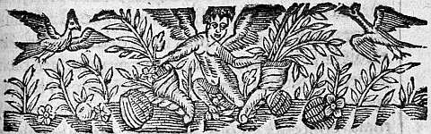
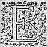
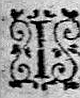
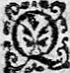
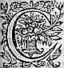
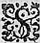
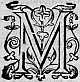

LESIXIESME
LIVRE DE LA
SECONDE PARTIE
D'ASTREE.
Édition de 1610, p. 323.
Édition de Vaganay, p. 207.

ENCORES que la nuict fustfut desja bien fort avancee, lors que ces Bergeres se coucherent sur les juppes et sayes de leurs BergeresBergers η , si est-ce qu'estant mal accoustumees de dormir sous le Ciel seulement, et sur l'herbe, et principalement la nuict, elles demeurerent long temps à s'entretenir avant que le sommeil les saisist. Et parce que l'horreur de la nuict leur faisoit peur, elles se mirent et resserrerent presque toutes en un monceau : Et lors estant plus esveillees qu'elles
n'eussent voulu, Diane qui de fortune se trouva plus pres de Madonthe, apres quelques autres propos communs luy demanda qu'elleη estoit la fortune qui l'avoit conduitte en cestecette contrée. - Sage Diane, respondit-elle, l'histoire en seroit et trop longue et trop ennuyeuse, mais contentez-vous je vous supplie que ce mesme Amour qui n'est point incogneu parmy vos hameaux, ne l'est non plus parmy les Dames et les Chevaliers, et que c'est luy qui m'a revestuë comme vous me pouvez voir, encor que ma naissance me releve beaucoup par dessus cetcest estat. - S'il n'y a rien, dit Philis, qui vous en empesche que la crainte de nous estre ennuieuseennuyeuse, je responds pour toutes, que cela ne vous doit pas arrester : car je sçay qu'il y a long temps que nous desirons toutes d'entendre ce discours de vous, et il me semble que nous ne sçaurions trouver un temps plus à propos, puis que voicy une heure que nous ne pouvons mieux employer et que nous sommes seules, je veux dire sans Berger. - Quant à moy adjousta Diane, ce qui me le faictfait desirer plus particulierement, c'est que ceux qui nous voyent separees l'une de l'autre, me disent que nous nous ressemblons beaucoup : de sorte que vos fortunes me touchent comme si elles estoient les miennes, et semble que je sois presque obligee de m'en enquerir. - Ce me sera tousjours, dit Madonthe, beaucoup de contentement de ressembler à une telle beauté que la vostre : mais je ne voudrois pas pour vostre repos que vos fortunes fussent semblables aux miennes. - Je vous suis obligee, dit Diane, de
cette bonne volonté. Mais ne croyez pas que chacun n'ait son fardeau à porter, et qui nous est d'autant plus pesant que celuy des autres, que celuy cy est tout à fait sur nos espaules, et que l'autre ne nous touche que par le moyen de la compassion. Que cela donc ne vous empesche de satisfaire à la requeste que nous vous faisons. - Vous me permettezpermettrez donc, respondit Madonthe, de parler un peu bas, afin de n'estre point ouye des Bergers qui sont pres de nous : car j'aurois trop de honte qu'ils fussent tesmoins de mes erreurs, outre que je ne voudrois pas que Thersandre me peustpeut ouyr, pour les raisons que vous pourrez juger par la suitte de mon discours : Et lors elle commença de cetteceste sorte.
HISTOIRE
DE DAMON ET DE MADONTHE.

IL est tres à propos, sage et discretediscrette trouppe, que de nuict je vous raconte ma vie, afin que couverte des tenebres, j'aye moins de honte à vous dire mes folies, telles faut-il que je nomme les occasions qui me faisant changer l'estat où la fortune m'avoit fait naistre, m'ont contrainte de prendre celuy où vous me voyez. Car encor que je sois avec les habits que je porte, et la houletehoulette en la main, je ne suis pas toutesfois Bergere : mais
née de parens beaucoup plus relevez. Mon pere suivant la fortune de Thierry : acquit un si grand credit parmy les gens de guerre, qu'il commandoit en son absence à toutes ses armees non pas qu'il fustfut Visigoth comme luy, mais s'estant trouvé avec beaucoup d'authorité parmy les Aquitaniens, il fut tant ayméaimé et tant favorisé de ce Roy qu'il l'obligea de se donner entierement à luy au service duquel, outre les biens qu'il avoit de ses predecesseurs, il en acquit tant d'autres, qu'il n'y avoit personne en Aquitanie qui se peustpust dire plus riche qu'il estoit. Ayant vescu de ceste sorte longues annees, tout le malheur qu'il ressentit jamais, fut seulement de n'avoir d'autres enfans que moy : car encor que sa mort futfust violente, si luy fut elle tant honorable que je la tiens pour l'une de ses meilleures fortunes ; Puis qu'apres avoir fait lever le siege d'Orleans au cruel Attile, en fin le poursuivant jusques aux champs Cathalauniques, Thierry, Merovee, et Ætius luy donnerent la bataille, et le deffirent, et de fortune mon pere combatit ce jour là à la main droitte de son Roy, qui avoit eu l'aileayle gauche de la bataille, et Méroüee la droitte. Et d'autant que tout l'effort d'Attile fut presque sur le costé de Thierry, apres un long combat, le Roy Visigot y fut tué, et mon pere aussi, qui percépersé de plus de cent coups, fut trouvé sur le corps de son Roy où il s'estoit mis pour le deffendre, et pour recevoir les coups en son lieu. Ce que Torrismond, son successeur, et son fils, eut tant agreable, que la bataille estant gagnee,
il fit
emporter son pere et le mien, et les fit enterrer en
un mesme tombeau, mettant toutesfois la chasse de
plomb de mon pere aux pieds du sien, y faisant graver
des inscriptions tant honorables, que la memoire ne
s'en esteindra jamais.
Lors que mon pere mourut je pouvois avoir l'aage de
sept ou huict ans, et commençay dés ce temps-là de
ressentir les rigueurs de la fortune. Car Leontidas qui avoit succedé à la charge de mon pere, et que
Torrismond aymoit par dessus tous les Chevaliers
d'Aquitaine, usa de tant d'artifice que je luy fus
remise entre les mains, et presque ravie de celles de
ma mere, sous un pretexte qu'ils nommoient raison
d'Estat, disant qu'ayant tant de grands biens, et de
places fortes, il falloitfaloit
prendre garde que je ne me
mariasse à personneη
qui ne fust bien affectionnee au
service de Torrismond. Me voila donc sans pere, et
sans mere, privée de l'un par la rigueur de mort, et
de l'autre par celle de cetteceste raison d'estat :
toutesfois la fortune me fut favorable en ce que je
rencontray tant de douceur, et tant d'honnesteté en
Leontidas, que je ne pouvois desirer de meilleurs
offices que ceux que je recevois de luy, ne luy
defaillant rien que le nom de pere. Sa femme n'estoit
pas de cetteceste humeur, qui au contraire me traittoit
si cruellement que je puis dire n'avoir jamais tant
hay la mort, que je luy voulois de malη
.
Or le dessein de Leontidas estoit de m'élever jusques
en l'aage de me marier, et puis de me donner à l'un de
ses neveux qu'il avoit éleuesleu pour
son heritier, n'ayantaiant jamais peu avoir des enfans : mais d'autant que la contrainte est la plus puissante occasion qui empécheempesche un esprit genereux de se plier à quelque chose, il avint que son neveunepveu n'eut jamais de l'amour pour moy ny moy pour luy, nous semblant que nos fortunes estant limitees en nous mesmes, nous estions cause l'un à l'autre de ce que nous ne pouvions esperer rien de plus grand, outre que nous n'estimions pas ce qui nous estoit acquis sans peine. Ce furent donc ces considerations ou d'autres plus cachees, qui nous empescherent d'avoir de l'amitié l'un pour l'autre : mais lors que j'eus un peu d'aageâge il y en euteust bien de plus grandes. Car la recherche de plusieurs jeunes Chevaliers, si pleine d'honneur et de respect, me faisoit paroistre plus fascheux le mespris dont usoit le nepveu de Leontidas envers moy. Luy d'autre costé picqué de ce que je le desdaignois, comme il luy sembloit, se retira, de sorte que je ne le voyois plus que comme estranger, dont je ne recevois peu de contentement. Et quoy que le respect que chacun portoit à Leontidas pour l'extraordinaire faveur que Torrismond luy faisoit, fustfut cause que plusieurs n'avoientnavoient pas la hardiesse de se declarer entierement, si est-ce qu'il se rencontra un parent assez proche de Leontidas, qui fermant les yeux à toutes ces considerations, entreprit de me servir, quoy qu'il luy en peustpeut advenir. Dés le commencement ce n'estoit pas avec dessein de s'y embarquer à bon escient, mais seulement pour n'estre pas oiseuxoyseux, et pour faire paroistre
qu'il avoit assez de merite, et de courage pour se faire aymer, et pour aymer ce que l'on estimoit de plus relevé dans la Cour ; pouvant dire sans vanité, que de ma condition il n'y avoit rien qui le fust plus que moy. Et voyez comme ceux qui blasment l'amour ont peu de raison de le faire. Lors que ce jeune Chevalier commença de me servir, il estoit homme sans respect, outrageux, violent et le plus incompatible de tous ceux de son aage : au reste, vif, ardant, et si courageux, que le nom de temeraire luy estoit mieux deu que celuy de vaillant. Mais depuis qu'Amour l'euteust vivement touché, il changea toutes ces imperfections en vertu, et s'estudia de sorte de se rendre aymable qu'il fut depuis le miroir des Chevaliers de Torrismond. Il s'appelloit Damon, parent assez proche de Leontidas, comme vous avez ouy dire, et de qui le Roy ne faisoit point bon jugement pour les raisons que je vous ay dites : toutesfois lors qu'il commença de se changer, le Roy aussi changea d'opinion. Mais parce que Leontidas estoit homme tres-avisé, et qui toute sa vie avoit fait profession de remarquer les actions d'autruy, et d'en faire jugement ; il se prist bien tost garde de son dessein, qui luy estoit insupportable, à cause de la volonté qu'il avoit de me donner à son nepveu. Et pour couppercouper chemin à cette nouvelle recherche, il me deffendit si absolument, de le voir, et luy en parla de sorte que nous demeuramesdemeurâmes tous deux plus offencez de luy que je ne vous sçaurois dire. Et suivant la coustume des choses deffenduës, nous commençasmescommençâmes
deslors d'avoir plus de desir de nous voir, et fusmesfûmes presque plus attirez à l'amitié l'un de l'autre que nous n'estions auparavant. Il n'y a rien, discrettes Bergeres, qui me contraigne de vous advoüer, ou de nier ce que je vay vous dire : si bien que vous devez croire, que c'est la seule verité qui m'y oblige. Lors que Damon commença de me rechercher, son humeur m'estoit si desagreable que je ne le pouvois souffrir : mais depuis que Leontidas avec de fascheusesfâcheuses paroles m'eut si expressément deffendudefendu de le voir, le doute qu'il fit paroistre d'avoir de moy, me despita si fort, que je resolus de n'en aymer jamais d'autre : Et cela fut cause qu'avec un soin extréme, je l'alloisalois destournant des vices, à quoy son naturel le rendoit enclin, quelquesfois les luy blasmant en autruy, et d'autresfois luy disant, que mon humeur n'estoit point d'aymeraimer ceux qui en estoient atteints. Le formant de cette sorte sur un nouveau modelle, lors que je cogneusconnus les conditions de ce Chevalier changéeschangee , je l'aymayaimay beaucoup plus que s'il fustfut venu me servir avec ces mesmes perfections : d'autant que chacun se plaist beaucoup plus en son ouvrage qu'en celuy d'autruy. Je vivois toutesfois si discrettement avec luy qu'il ne peutput pour lors recognoistrereconnoistre au vray si je l'aymois, et me tenois tellement sur mes gardes, qu'il n'avoit seulement la hardiesse de me declarer sa volonté par ses parolesparolles : effect bien different de ceux que son outrecuidance avoit accoustumé de produire auparavant. Ce qu'on pourroit trouver estrange, si Amour n'avoit faictfait autresfois des changemenschangements
beaucoup plus contraires en maintes personnes. En fin luy semblant que tout le service qu'il me rendoit estoit perdu, si je ne sçavois son intention, il resolut de prendre un peu plus de courage, et de hazarder cette fortune. Et parce qu'il creut de le pouvoir mieux faire par l'escriture que par les paroles, apres une longue dispute en son esprit, il fit une telle lettre.

C'Est bien temerité d'aymer tant de perfections, mais
aussi c'est bien mon devoir de servir tant de
merites : Et si vous voulez esteindre l'affection de
ceux qui vous ayment, il faut que de mesme vous
laissiez les perfections qui vous font aymer, et si
vous ne voulez point estre aymee, vueillez aussi
n'estre point aymable, autrement ne trouvez estrange
que vous soyez desobeye : car la force excusera
tousjours ceux qui feront cette offence contre vostre
volonté, puis que la necessitéη
ne recognoistreconnoit pas
mesme la Loy que les Dieux nous imposent.
Mais quand il me voulut faire voir cestecette lettre, il
ne fut pas sans peine, parce qu'il sçavoit bien que je
ne la recevrois pas sans artifice. En fin voyez
quelles sont les inventions d'Amour. Il me vint
trouver, fistfit semblant de m'entretenir des nouvelles
de la Cour, me raconta deux ou trois accidensaccidents sur ce
sujetsubjet avenus depuis peu, et en fin me dit qu'il
avoit recognureconnu une nouvelle affection qui n'estoit
petite, mais qu'il craignoit de me la dire, par ce
que la Dame estoit de mes amies, et le Chevalier de
ses amis. - Et quoy, luy dis-je, me tenez vous pour
si peu discrettediscrete que je ne sçache taire ce qui ne doit
pas estre sçeu ? - Ce n'est point cette doute, me
dit-il, qui m'en empescheempéche , mais que vous n'en vueillez
mal à mon amy.
η
- Et pourquoy cela, luy respondis-je,
puis que l'amour qui est honneste et pleine de
respect, ne peut offencer personne ?
Je voyois bien, gentiles Bergeres, qu'il estoit en
peine de ce qu'il avoit à faire : mais je ne pensois
point que ce fust pour son particulier, m'imaginant
que s'il eust eu la volonté de m'en parler, il l'eust
faictfait dés long temps, en ayant eu diverses commoditez.
Et cela fut cause que je l'en pressay plus, peut estre
que je ne devois. Enfin il me dit que de me dire
les noms, c'estoit chose qu'il n'oseroit faire, pour
plusieurs considerations, mais qu'il m'en feroit voir
une lettre qu'il avoit trouvee ce matin mesme. Et à
ce mot il mit la main dans sa poche, et me monstramontra la lettre qu'il venoit de m'escrire, que sans
difficulté je leus sans en recognoistrereconnoistre l'escriture,
par ce que je n'en avois jamais
veu encores. Mais si
auparavant j'avois un peu de volonté d'en sçavoir les
noms, apres cette lecture j'en eus un extreme desir, et
lors que je l'en pressois le plus je le vis sous-rire,
et ne me dire que de fort mauvaises excuses. - Et
quoy Damon, luy dis-je, depuis quand estes vous
devenu si peu soucieux de me plaire que vous ne me
vueillez dire ce que je vous demande ? - Je crains, me
respondit-il, de vous offencer si je vous obeys : car
celle à qui cette lettre s'addresse est fort de vos
amies, comme je vous ay dit. - Vous me ferez sans
doute, luy repliquay-je, une offence beaucoup plus
grande en me desobeissantdesobeyssant . - Je suis donc, me dit-il,
entre deux grandes extremitez, mais puis que la faute
que je feray par vostre commandement sera beaucoup
moindre, je vais vous obeyr, et me prenant la lettre,
me la relutreleut tout haut, mais estant parvenu à la fin,
il s'arresta tout court sans nommer personne.
Voyez, belles Bergeres, que c'est que l'Amour !
Quelque fois il porte les esprits les plus abaissez à des temeritez incroyables, et d'autres fois fait
trembler les courages plus relevez en des occasions que les moindres personnes ne redouteroient point.
η
Damon en sert d'exemple, puis que luy, qui entre les
plus effroyables dangers des armes pouvoit estre
appellé temeraire, comme je vous ay dit, n'avoit la
hardiesse de dire son nom à une fille, fille encores
qu'il sçavoit bien ne luy vouloir point de mal. Mais
s'il avoit peu de courage, j'avois ce me semble, encore
moins d'entendement : car je devois biens cognoistrebien connoistre à la crainte
qu'il avoit que cela luy touchoit, et je veux croire qu'Amour estoit celuy qui me bouchoit les yeux, ayant fait dessein de rendre par nous sa puissance mieux cognuëconnuë à chacun. Autrement j'y eusse bien pris garde, puis que je l'aymois, et qu'on dit que les yeux des Amants percentpersent les murailles. Quoy que ce fustfut j'advouë que je n'y pensois point, et voyant qu'il se taisoit : - Et quoy ? luy dis-je, Damon, n'en sçauray-je autre chose ? Vrayement je pensois avoir plus de pouvoir sur vous. - Tant s'en faut, me respondit-il, que mon silence procede de là : que ce qui m'empescheempéche de vous en dire d'avantagedavantage , c'est que vous pouvez trop sur moy. Et toutesfois ce que je vous en ay dictdit vous devroit suffire : car que puis-je vous en declarer, apres vous en avoir fait lire la lettre, et ouyr la voix ? - Comment, luy dis-je, toute estonnee, est-ce vous Damon qui l'avez escrite ? - C'est moy sans doute, dictdit -il, baissant les yeux contre terre. - Et je vous supplie, continuay-je, dictesdites -moy à qui elle s'addresse. - C'est, adjoustaadjouta t'il froidement, puis qu'il vous plaist de le sçavoir, à la belle Madonthe. Et à ce mot, il se teut pour voir, comme je croy, de quelle sorte je recevoisrecevrois cette declaration. J'advouë que je fus surprise, par ce que j'attendois toute autre responce que celle-là : et quoy que je l'aymasse comme je vous ay dictdit , et que ce fust d'une volonté resoluë, si est-ce que l'honneur qui doit tousjours tenir le premier lieu dans nos ames, me fit croire que ces parolesparolles m'offençoient. Et quoy que je recogneussereconnusse bien que j'avois esté cause de sa hardiesse, si ne voulus-je
point l'excuser, me semblant que comme que ce fust, il se devoit taire. Il est vray qu'Amour qui n'estoit pas foible en moy tenoit fort son party, et quoy qu'il ne peust estoufferpeut estoufer entierement les ressentimens que l'honneur me donnoit, si les adoucissoit-il infiniment. Enfin je luy respondis ainsi : - Malaisément, Damon, eusse-je attendu cette trahison de vous, en qui je m'asseurois comme en moy mesme : mais par cette action vous m'avez apprisapris qu'il ne se faut jamais fier en un jeune homme, ny en une personne temeraire. Toutesfois je ne vous accuse pas entierement de cestecette faute, j'en suis coulpable en partie, ayant vescu par le passé avec vous de la sorte que j'ay faictfait . Vostre outrecuidance sera cause que je seray plusadviseeavisee à l'advenir, et pour vous, et pour tous les autres qui vous ressembleront. - Si vous appellez trahison, me respondit-il, vous avoir plus aymee que vous n'avez pensé, je confesse que vous estes trahie de moy, et que vous le serez de cette sorte tant que je vivray, sçachant bien que ny vous nyne personne du monde ne sçauroit se figurer la grandeur de mon affection : Et si vous croyez que ma jeunesse m'en ait donné la volonté, et ma temerité la hardiesse, je maintiendray contre tous les hommes, que jamais vieillesse ne fut plus prudenteprudence que cette jeunesse, ny prudence plus sage que cette temerité que vous blasmez en moy. Que si j'ay failly comme vous dites, et que vous en soyez coulpable, ce n'est pas pour la façon dont vous avez vescu avec moy : mais par ce qu'estant si belle, vous vous estes renduë si pleine de perfection,
qu'il est impossible que tous ceux qui vous verront ne commettent lesde mesmes fautes que vous me reprochez. Et toutesfois je ne sçay quel demon ennemy de mon contentement, vous met à cette heure des opinions en l'ame si contraires à celles que vous venez de me dire. Et il faut bien que ce soit pour mon malheur, que vous les ayez si promptement oubliées : Ne m'avez-vous pas dit que l'amour n'offençoit personne ? Si cela est, pourquoy le jugez vous à cette heure autrement contre moy ? Mais si ces parolesparolles ne vous contentent, voicy Damon devant vous, qui vous offre l'estomach,estomac voire ce mesme cœurη qui vous adore, afin que pour vous satisfaire vous luy donniez tel chastiment qu'il vous plairaplairra , et s'il en refuse un seul (sinon la deffensedeffence que vous luy pourriez faire de vous servir) il veut que vous le teniez pour le plus traistre qui fut jamais, et le plus indigne de tous les hommes d'estre honoré de vos bonnes graces. - Si je vous ay dit, luy respondis-je, que l'on ne s'offençoit point d'estre aymée, j'y ay adjousté le respect et l'honnesteté, à quoy l'on est obligé : Et quand vous vous fussiez contenté de me rendre preuve de vostre bonne volonté par ce respect seulement, et non point par l'outrecuidance de vos parolesparolles , j'eusse eu autant d'occasion de vous aymer, que j'en ay de vous haïrhayr . Car pourray-je bien douter à l'advenir que Damon ne recherche ma honte, puis qu'il a eu la hardiesse de me le dire luy-mesme ? QuelleQu'elleη me pensez-vous, Damon, pour croire que sans vengeance je souffre ces injures ? N'avez-vous point de memoire
du pere que j'ay eu ? n'avez-vous point recogneu quellereconnu qu'elle vie a esté la mienne ? Et combien j'ay eu de soin de me conserver, non seulement telle que je dois estre, mais en sorte que la mesdisance n'eut occasion de mordre sur mes actions ? Ressouvenez-vous que si vous n'avez ny memoire ny jugement pour ce que je vous dis, j'en ay assez pour tous deux, et que si vous continuez, vous me donnerez sujet de vous rendre du desplaisir par toutes les voyes que je sçauray inventer. - Madame, me respondit-il incontinent, ne laissez de mettre en avant contre moy toutes les sortes de peine que vous en pourrez imaginer. Celuy qui a peu supporter l'effort de vos yeux, ne sçauroit craindre celuy de tout le reste de l'Univers. Ce ne sont que des tesmoignages de mon affection, qui me seront d'autant plus chers, qu'ils rendront plus de preuve que vous estes aymée de Damon : Et ne pensez-plus que je vous mescognoisse, ny ceux dont vous estes descenduë. Vos vertus sont trop gravées en mon ame, et j'ay trop d'obligation à ceux qui vous ont mise au monde pour en perdre la memoire : mais si je ne vous ay offenséeoffencee que par la parole et non par le dessein que j'ay eu de vous rendre du service, laissons-là, Madame, cette fascheuse parole, oublions-làla : commandez-moy que je sois muet, pourveu qu'il soit permis à mon ame de vous adorer, je veux bien ne parler jamais : Mais si vous redoutez si fort que je vous die que je vous ayme, et si vous croyez que cela importe tant à cette reputation dont justement vous estes si soigneuse,
ne voyez-vous pas que vous
vous allez procurer un extréme desplaisir, puis que
vivant avec moy comme vous me menassez, il sera
impossible que mon affection ne se manifeste à
chacun, et par ainsi ce que je vous dis en particulier
sera public par tous ceux de cetteceste Cour : et ne
serez-vous pas plus offencee de l'ouyr de la bouche
de chacun, et en public que de la mienne en
particulier ? Avant que d'ordonner ce qu'il vous plaist faire de
moy, je vous supplie, Madame, considerez ce que je
vous dis, et de plus que si je ne faux point vous
n'avez point de raison de me punir. Et si vous estes
offencee, et que ma faute vous desplaise, pourquoy
vous voulez vous faire plus de tort en la publiant à tout
le monde ?
Il seroit bien malaisé, sages Bergeres, de vous
redire toutes les raisons que Damon m'allegua : car je
n'ouys jamais mieux parler : J'advouë
toutefoistoutesfois que
j'esprouvayespreuvay bien en cetteceste occasion que le conseil
est tres-bon de ceux qui disent, qu'on ne doit jamais
declarer son affection à une Dame qu'auparavant on ne
l'ait obligee à quelque sorte de bonne volonté. Car
lors que l'offence qu'elle pense recevoir par telle
declaration la veut esloignereslongner, cette bonne volonté
qui la tient attachee l'empesche de lale
η
pouvoir
faire, et luy fait escouter par force telles paroles,
voire en fait faire un jugement plus favorable. Je
l'esprouvay, dis-je, à cette foisà ceste fois , puis qu'il me fut impossible de m'en separer, encoreencor que je ressentisse
l'injure que j'en recevois : au contraire avant
que de mettre fin à nos discours je consentis d'estre
aymee et servie de luy, pourveu que ce fustfut avec honneur et discretion. Et parce que Leontidas avoit continuellement les yeux sur nous, je luy commanday de ne me voir plus si souvent, et de dissimuler mieux qu'il n'avoit faictfait par le passé, afin de tromper cettecet homme. Je me souviens qu'en ce temps là, d'autant que Leontidas, encor que ce grand et sage Capitaine, ne laissoit toutefoistoutesfois de se laisser posseder à l'amour de quelques femmes, qui feignant de l'aymer, tiroient de son bien tout ce qu'elles pouvoient, et en cachette en favorisoient d'autres : ilη fit des vers qu'il m'envoya, et parce que nous craignons que les lettres venant à se perdre nos noms ne fissent recognoistre ce que nous desirions qui fust tenu cache, je l'appellois mon frere, et il me nommoit sa sœur. Je pense que je me ressouviendray encores des vers dont je vous parle. Il me semble qu'ils estoient tels.

QU'envieux de mon bien il parle ou qu'il blaspheme,
Qu'il remarque à nos yeux, ce qu'il pense estre en nous,
Qu'il cognoisse en effect que je ne suis moy-mesme,
Sinon, ma sœur, entant que je ne suis qu'à vous.
Que d'un œil importun il nous veille jaloux,
Que sur nos actions la mesdisance il seme :
Il peut bien m'esloigner de mon bien le plus doux,
Mais non pas empescher qu'en fin je ne vous ayme.
Malgré tous ces discours contre nous inventez,
Malgré tous ces soupçons qui nous ont tourmentez,
Mesme dans le cercueil, je fay vœu d'estre vostre :
Mais ce fascheux Argus, ne feroit-il pas mieux,
Nous laissant en repos d'employer tous ses yeux,
A garder la beauté qu'il paye pour un autre ?
Mais pour revenir à ce que je vous disois, depuis ce jour Damon se regla de sorte à ma volonté, que je ne puis nier que je n'eusse de l'Amour pour luy. Aussi estoit-il tel qu'il estoit bien mal-aisé de ne l'aymeraimer point, et mesme cognoissant combien l'affection qu'il me portoit luy avoit fait changer de vices en vertus. Et parce que pour tromper les yeux de Leontidas, nous ne nous parlions plus que par rencontre, et fort peu souvent en presence de quelqu'un ; plusieurs eurent opinion que le courage genereux de Damon n'avoit peu souffrir plus longuement les desdains dont j'avois usé envers luy, et qu'il s'estoit retiré de mon amitié, et Leontidas mesme y fut trompé, encoreencor que sa femme qui estoit infiniment soupçonneuse, l'asseurast tousjours du contraire. Et par ce qu'il desiroit passionnément, comme je vous ay dit, de me donner à son neveu, pour contenter son esprit, il pensa de mettre prezpres de moy une femme qui prit garde à mes actions sans en faire semblant. Elle se nommoit Leriane, et desja estoit bien fort advancéeavancee en son aage, toutesfois d'une humeur assez complaisante, mais au reste la plus fine et rusee qui fut jamais.
Pour ce coup je n'eus pas la veuë si bonne que
Damon ; car d'abord qu'elle me fut donnee, il
descouvrit le dessein de Leontidas, et par ce que je
la trouvois de bonne compagnie, et qu'elle faisoit tout
ce qu'elle pouvoit pour me plaire, je ne pouvois
croire qu'elle eust ceste mauvaise intention : Et
d'autant que continuellement il me disoit qu'elle me
tromperoit et que je m'en prisse garde, nous fismes
resolution de joüer au plus fin. Et puis qu'il ne
despendoit pas de nostre volonté, de l'esloignereslongner de
nous, nous pensasmes qu'il estoit à propos de faire
semblant que sa compagnie nous estoit tres-agreable.
Par cet artifice nous avions opinion de l'obliger à
ne nous rendre point tous les mauvais offices qu'elle
pourroit, et de faire paroistre à Leontidas que
nous n'avions point de dessein, que nous ne
voulussions bien qu'il sceust.
Oη
que nous eussions
esté advisésavisez , si nous eussions mis en effecteffet ceste
deliberation ! Mais oyez, gentiles Bergeres, ce qui en advintavint .
Leriane voyant la bonne chere que je luy faisois, se
monstroit si desireuse de me plaire, qu'en fin je vins
à l'aymer insensiblement ; et elle d'autre costé
prenant garde aux recherches que Damon luy faisoit,
creut aysément qu'il l'aymoit, et cetteceste
creance,
jointe à la beauté et aux perfections de ce jeune
Chevalier, convierent bien-tost Leriane de l'aymer,
de sorte qu'il n'y euteust que le pauvre Damon qui ne
se trompa point, et toutesfoistoutefois ce fut luy qui paya
plus cherement nos erreurs. Et quoy qu'il recogneust
bien, dés le commencement ce que je vous dis, si ne
m'en peut-
il empescher. Il me souviendra le reste de ma vie des paroles dont il usa, lors qu'il me le dictdit : - Ma sœur, me dit-il, vous aymez Leriane, mais souvenez-vous qu'elle ne le merite pas, et que je crains que vous n'y preniez garde trop tard. Elle a un tres mauvais dessein, et envers vous, et envers moy, car la femme de Leontidas ne vous l'a donnee que pour vous espier, et croyez que veritablement la bonne chere que vous m'avez commandé de luy faire, luy a donné occasion de croire que je l'aymois, et que cetteceste opinion est cause qu'elle ne me veut point de mal. - Tant mieux, luy dis-je, mon frere, en sous-riant, je sçay bien que vous ne serez pas amoureux d'elle, pour le moins je vous asseure que je n'en seray jamais jalouse : et ce pendant la bonne volonté qu'elle vous portera, la retiendra peut estre en son devoir, et l'empeschera de ne nous faire tout le mal qu'elle pourroit. - Dieu vueille, me dit-il, ma sœur, qu'il en advienneavienne comme vous dictesdites ; mais j'ay bien peur qu'au contraire cetteceste affection n'aitayt une autre fin : car il est impossible que je continuë de luy faire bonne chere, et se voyant deceüe, Dieu sçait ce qu'elle ne fera point. - Elle ne vous prendra, peut-estre, pas par force, luy dis-je : - Dieu vueille, me repliqua-t'il, que je sois mauvais devin, et qu'elle ne fasse pas quelque chose de pire encores que ce que vous dictesdittes . Je vis bien que cette femme luy estoit importune, mais je ne jugeay jamais qu'elle eust de l'Amour, et pensois que toutes ses recherches n'estoient que pour mieux faire la complaisante. Et par ce qu'encores que
Leontidas me fist toute la bonne chere qu'il luy estoit possible, si est-ce que le mauvais traictementtraittement que je recevois de sa femme me faisoit passer une vie fort ennuyeuse. Je respondis à Damon, qu'il devoit considerer la miserable vie que je faisois : que je n'avois contentement que de luy ny consolation que de Leriane ; que je croyois bien que l'intention de Leontidas, et de sa femme, avoit esté en mettant Leriane aupres de moy de m'avoir donné un espion, mais que je croyois bien aussi qu'ils pourroient se tromper, et que cestecette femme se sentoit tellement obligee aux caresses que je luy avois faites, que je cognoissois bien que veritablement elle m'aimoitaymoit , et en fin qu'à la longue il perdroit la mauvaise opinion qu'il avoit d'elle, parce que la pratiquant davantaged'avantage , il cognoistroit que c'estoit une personne d'honneur. Damon ne sçeut faire autre chose, voyant, comme j'en estois abusee, que de plier les espaules, et depuis ne m'en osa plus parler, de peur de me desplaire. Et voyez combien la bonne opinion que nous avons d'une personne, a de force sur nous : je voyois bien la recherche qu'elle faisoit à Damon, et ne pouvois m'imaginer, que ce fustfut à mauvaise intention, me figurant que tout ce qu'elle en faisoit, n'estoit que pour me complaire. O que le visage dissimulé de la preud'hommieprud'hommie couvre, et nous fait mescognoistre de vices ! Et cela estoit cause que quelquesfois Damon recevoit mauvaise chere de moy, me semblant qu'il ne traittoit pas avec Leriane comme il devoit, puis que je luy avois dit que je l'aymoisaimois , et que c'estoit la moindre
chose qu'il deustdeut faire pour moy, que de faire cas de ceux quede qui η je cherissois l'amitié. Ce que Damon recognoissoit bien, et ne s'en osoit plaindre, de peur de faire pis : mais seulement nourrissoit en son ame une si cruelle hainehayne contre elle, qu'à peine la pouvoit il cacher. Au contraire Leriane augmentoit de jour à autre de telle sorte cestecette affection qu'elle luy portoit, qu'en fin voyant qu'il ne faisoit pas semblant de la recognoistre, elle ne se peut empescher de luy escrire une lettre si pleine de passion, que Damon ne pouvant plus dissimuler, luy en osta si bien toute esperance, qu'elle ne perdit pas seulement l'amour qu'elle luy portoit : mais en sa place y fist naistre une si grande hayne qu'elle jura sa perte. Que si elle eust peu prouverpreuver , en l'accusant à Leontidas, ce qu'elle sçavoit de nostre affection, il n'y a point de doute qu'elle l'eust fait : mais nostre bon-heur fut tel que quelque familiarité qui eust esté entre nous, je ne luy en avois jamais parlé que fort peu. Il est vray que je l'ay depuis recogneuë assez fine et malicieuse pour croire que s'il ne luy eust falu que quelque preuve, elle ne s'y fust pas arrestee : parce qu'elle n'eust jamais manqué d'invention ; mais un des principaux sujectssujets qui l'en empescha, ce fut ce que j'ay jugé depuis qu'elle eut crainte que Damon n'eust gardé desles lettres qu'elle luy avoit escrites, et que par ce moyen Leontidas l'eust recogneuërecognuë pour une tres mauvaise femme, et toutesfois ceste consideration ne pouvoit encor estre assez forte pour l'empescher, parce qu'elle eust peu dire qu'elle avoit faictfait semblant d'aymeraimer Damon
pour le
convier de ne se fier
η
plus en elle : et sans doute Leontidas et sa femme l'eussent creuëcruë , ayant conceu
une si bonne opinion d'elle qu'ils ne pensoientpensoit
pas
qu'il y eust Matrone
en Gaule plus sage que Leriane.
Mais si j'avois eu tort en l'amitié que je luy
portois, Damon ne se peut excuser qu'il n'aitayt
failly en cestecette actionη
: car s'il m'eust montré la lettre
qu'elle luy avoit escritte, il n'y a point de doute
qu'il m'eust sortie d'erreur, et que nous ne fussions
pas tombeztumbez aux malheurs où nous
nous vismes depuis : Et ce qui l'en empescha, comme je pense, ce fut la
cruelle responce qu'il luy avoit faite, d'autant qu'il
eut peur que je la visse, et luy en sceusse mauvais
gré. Tant y a qu'il me le tint si secret que je n'en
sçeus rien pour lors.
Or Leriane ayant faictfait dessein comme je vous disois,
de se venger de ce Chevalier, jugea qu'il n'y avoit
point de moyen plus propre que celuy que je luy en
donnerois. Et sçachant bien que vivant familierement
avec moy, il ne pouvoit pas estre qu'il ne s'en
presentast quelque bonne occasion, elle se rendit si
soigneuse
de me voir, et de me suivre ;
que je la pouvois dire
l'ombre qui accompagnoit mon corps. Et parce qu'elle
avoit un esprit vif, et qui entroit presque dans les
intentions des personnes, elle recogneut que
Thersandre m'aimoit. Je dis ce mesme Thersandre que vous voyez qui est en
ce lieu avec moy. Il ne faut pas que je vous die ce
qui est de sa personne, puis que vous le
voyez,
sages Bergeres : mais ouy bien de qu'ellequelle
η
condition il
est, sçachez donc que son pere ayant suivy le mien
en tous ses voyages de guerre, ils furent en fin tuez
tous deux, le jour que Thierry mourut : Et parce que cestui
cestuy-cy avoit esté nourry petit enfant dans la
maison de mon pere, il avoit conceu une si grande
affection pourde
moy, que la difference de nos conditions,
ne le peut pas empescher de me regarder d'autre sorte
qu'il ne devoit. Et j'en pouvois bien estre cause
sans y penser : car la grande inégalité qui estoit entre
nous me faisoit recevoir tous ses services, non pas comme d'un amant, mais comme d'un domestique, le lieu
d'où il estoit ne luy pouvant donner par
raison une
plus grande pretention pour mon regard. Mais Amour
qui faisoit n'aistre ses pensees en son ame, d'autant qu'il est aveugle, peut sans reproche en produire de
plus déraisonnables, et par ainsi luy faisoit concevoir
des esperances qui estoient du tout esloignees de la
raison. Toutesfois Leriane qui, plus fine que moy, avoit
jetté les yeux sur luy et avoit fort bien recogneu
son intention, le jugea un sujet tres-propre pour
commencer sa vengeance. Elle sçavoit bien que de
toutes les amertumes d'Amour, il n'y en avoit point
de si difficille que la jalousie, ny qui fust receuë
plus aysémentaisément en une ame qui ayme bien. Elle
commence donc de se rendre familiere avec luy, luy
fait paroistre beaucoup de bonne volonté, luy offre
toute sorte d'assistance en tout ce qui se presentera,
bref peu à peu l'attire aupres de moy, et luy
donne commodité de me voir, et de parler
à moy : Mais voyant que sa modestie l'empeschoit de me declarer sa volonté, elle resolut de luy en donner le courage, et avec ce dessein, un jour qu'elle le trouva à propos, apres quelques discours esloignez, et qu'elle fit venir sur ce qu'elle luy vouloit dire, elle luy fit entendre qu'elle et moy nous estions souvent estonnees de le voir, sans qu'il eust encores fait choix de quelque maistresse, et que je disois que je n'en pouvois juger la cause : car de dire que ce fust faute de volonté, l'aage où il estoit ne le pouvoit permettre : que ce fustfut faute de courage, encores moins, puis qu'il avoit rendu trop de tesmoignage de ce qu'il estoit, et que la cognoissance qu'il avoit de luy mesme, luy devoit donner assez d'asseurance de pouvoir acquerir les bonnes graces de la plus belle de ceste courcette court , tellement que je n'en voyois autre occasion sinon qu'il ne trouvoit rien digne de luy. Thersandre qui croyoit ce qu'elle disoit, et qui se sentoitsantoit toucher l'endroit le plus sensible de son ame : - Helas ma fille ! luy dit-il, en souspirant, (car telle estoit l'alianceη dont il la nommoit) Helas ! Que Madame et vous avez peu remarqué mes actions, puis que vous n'avez recogneu ma folie. J'ayme, mais helas ! J'ayme en tel lieu, qu'il vaut mieux le taire pour n'estre estimé insensé, que le dire pour esperer tant soit peu d'allegement. Ceste ruzee de Leriane, qui sçavoit bien ce qu'il vouloit dire feignant de ne l'entendre pas, le tournatourne de tant de costezcôtez , qu'elle luy arracha le nom de Madonthe, de la bouche, mais avec tant d'excuses, qu'elle jugea bien qu'il recognoissoit
son outrecuidance, et qu'il falloit luy donner du courage pour continuer son dessein. C'est pourquoy d'abord elle luy dit, qu'elle ne trouvoit point tant d'inesgalitéinegalité entre luy, et moy que cela l'en deustd'eust retirer. Que si la fortune m'avoit favorisee de beaucoup de biens et d'estre nee de ces grands ayeulsayeux dont je tirois mon origine, qu'il avoit tant de vertus, que s'il estoit moindre en fortune, il m'estoit esgalégal en merite. Elle avoit faint tout le discours precedent qu'elle disoit que nous avions eu ensemble, et m'en avoit attribué la plus grande partie, pour luy donner la hardiesse de se declarer : et maintenant pour luy donner le courage de continuer, elle en invente un autre aussi peu veritable, luylui disant qu'elle avoit bien recogneu aux paroles que je luy avois dictesdittes de luy plusieurs fois, que je l'estimois, voire que je l'aymoisaimois , autant que je me sentois importunee de Damon. Elle ne mentoit pas encoreencor qu'elle creut de mentir ; car il estoit vray que je l'aimois autant que j'estois importunee de Damon : Et pour le luy persuader mieux, luy disoit que bien souvent quand il s'approchoit de moy, je disois, me tournant vers elle : - Que pour le moins Damon fust changé en Thersandre. Et sur ce discours elle s'estendoit le plus qu'elle pouvoit en des loüanges qu'elle disoit de luy, et qu'elle faignoitfeignoit de redire apres moy, et pour la fin juroit que je ne trouvois rien de mauvais en luy, que le trop grand respect qu'il me portoit, afinà fin que par ce moyen il fust plus hardy, et perdit la grande apprehension qu'il avoit pour nostre inesgalitéinegalité .
Ayant donc jetté de cette sorte les fondements de sa trahison, elle voulut sonder ma volonté, me parlant quelquesfois de Damon : et comme si c'eust esté par mesgarde, elle y mesloit tousjours quelque chose à la loüange de Thersandre. Ce que je n'entendois point : car je n'eusse jamais tourné les yeux sur luy, et voyant que j'en parlois comme d'une personne indifferenteindiferente , elle euteust opinion que peut-estre en recevrois-je lesdes lettres, si elles m'estoient donnees bien à propos. Le jour de l'an approchoit, où l'on a de coustume de se donner l'un à l'autre de petits presents, que nous nommons les estreinesestrénesη η . Elle pensa que des gands parfumez qu'elle avoit recouvrez seroient propres pour m'en faire voir uneη . Elle asseura donc Thersandre de m'en donner, et sous cette esperance, en retire une de luy qu'elle met dans un des doigts du gand, et prend si bien son temps, qu'en la meilleure compagnie où elle me voit, elle me presente ses estreinesη . De fortune Damon y estoit : et parce qu'elle euteust crainte que η la rencontrant du doigt je n'en donnasse cognoissance à chacun, elle me dit qu'une cousture s'estoit decousuë et qu'elle la racommoderoit : et à ce mot me ganta celuy où la lettre estoit, laissant l'autre entre les mains de ceux qui le vouloient sentir : mais quoy qu'elle m'en eust avertie lors que je rencontray le papier, je ne peus m'empescher de demander que c'estoit : à quoy elle respondit que c'estoit la cousturecouture qui avoit lasché quand elle les avoit essayez. Quant à moy qui n'entendois point cette finesse, je
repliquay que ce n'estoit point cela. Elle avec une asseurance incroyable : - Vous ne faites que resver, ma Maistresse, me dit-elle, car c'estoit ainsi qu'elle me nommoit, c'est moy-mesme qui l'ay descousu sans y penser. Je jugeay bien que c'estoit chose qu'il faloit dissimuler en si bonne compagnie ; mais j'estois trop jeune pour le sçavoir faire de sorte que Damon qui avoit les yeux sur nous, neη s'en apperceut : Et à la verité j'estois si peu accoutumee à telles rencontres, que excusableη si je les sçavois si peu cacher. Damon qui avoit de l'Amour, et qui sçavoit par experience combien ceste passion rend les personnes ingenieuses, jugea bien incontinent qu'il y avoit une lettre, mais il ne peut deviner de qui c'estoit : car pour Thersandre il ne l'en eust jamais soupçonné : Toutesfois ce qu'il en vid depuis luy fit croire que celle-cy venoit de luy, comme je vous diray. Quant à moy encores que je voulusse vivre comme je devois, si ne laissois-je d'avoir un extreme desir de sçavoir ce qu'il y avoit dans ce gand, et cela fut cause que je me retiray le plustost que je peus pour le voir : Et lors que je fus seule, je sors le papier, et le despliant, je trouve qu'il y avoit telles paroles.
LETTRE
DE THERSANDRE A
MADONTHE.

COmme contrainctcontraint , et non pas comme m'en estimant digne, je prensprends la hardiesse, Madame, de me dire vostre tres-humble serviteur. S'il faloit que vous fussiez seulement servie de ceux qui sont dignes de vous, il faudroit aussi que ceux là seuls eussent le bon-heur de vostre veuë. Car encor que nous n'en ayons les merites, nous ne laissons d'en recevoir les desirs, qui nous sont d'autant plus insupportables qu'ils sont moins accompagnez de l'esperanceη . Mais si l'Amour continuant en vous ses ordinaires miracles, vous rendoit agreable une extreme affection, Madame, je m'estimerois tres-heureux, et vous seriez fort fidellement servie. Car je sçay bien que jamais personne ne parviendra à la grandeur de ma passion encore que tous les cœurs se missent ensemble pour vous aymer, et adorer.
Les flateries de cestecette lettre me pleurent, mais venant de la part de Thersandre, j'en eus honte ne voulant qu'une telle personne eust la hardiesse de tourner les yeux sur moy, pour ce sujectsujet . J'en fus offencee contre Leriane, et trouvant fort estrange qu'elle m'eust faictfait voir cestecette lettre, je consultay longuement en moy-mesme, si je
m'en devois plaindre à elle, ou bien n'en faire point de semblant. Je resolus en fin de luy dire que je l'avois jettée au feu sans la lire : parce que si j'en eusse fait des plaintes, peut estre m'en eust-elle dit davantaged'avantage , et jen voulois fuyrfuir les occasions, tant pour en amortir le bruit entierement, que pour n'avoir sujet d'esloigner Leriane de moy, de qui l'humeur m'estoit tres-agreable. Et toutesfois je cognoissois qu'elle avoit eu tort, mais ma jeunesse et l'amitié que je luy portois, me contraignirent de l'oublier et de chercher mesme des excuses à sa faute. Lors qu'elle revint de là à quelques jours, et n'ayant pas, comme je crois, la hardiesse de me voir si tost apres ce beau message. Et parce que je ne voulusvoulu porter les gands qu'elle m'avoit donnez, ayant opinion qu'ils venoyentvenoient de Thersandre aussi bien que la lettre, elle me demanda que j'en avois faict. - Je les ay donnez luy dis-je, d'autant qu'ils n'estoient pas bien pour ma main. - Et du papier, dit-elle, qui estoit dedans, qu'en avez-vous faictfait ? - Je l'ay jetté au feu, luy respondis-je : estoit-ce quelque chose d'importance ? - Vous ne l'avez donc point leu, me dit-elle ? Et luy ayant respondu que non, elle continua qu'elle fait estoit tres-ayseaise , parce qu'elle avoit esté trompee par une personne en qui elle se fioit, mais qu'elle loüoit Dieu que le feu euteust nettoyé sa faute. - Et qu'estoit-ce, luy, demanday-je ? - Vous ne le sçaurez pas de moy, dit-elle, et vous asseure que depuis que j'ay sçeu ce que c'estoit (qui n'est que depuis une heure) je mourois de peur que vous ne la leussiez, et venois pour vous en empescher. Ceste fine femme pensa bien toutesfois que je
l'avois
leuë, mais cognoissant, par ce que je luy en disois,
que je n'estois pas encor bien disposee à ce qu'elle
vouloit, elle creut estre necessaire de me laisser
une bonne opinion d'elle, et de feindre aussi bien que
moy. Et parce qu'elle sçavoit que j'aymois Damon,
elle en accuse cestecette bonne volonté, et pensa qu'elle
ne pouvoit mieux bastir son dessein que des ruines de
l'amitiéη
que je portois à ce Chevalier. Cela fut cause
qu'elle tourna tout son esprit à la ruiner : et
d'autant qu'elle cognoissoit bien que je n'avois pas
mauvaiseη
opinion de moy, elle se figura que l'amitié
que Damon me portoit, estoit cause que je l'aymois.
Elle fit donc dessein de me mettre en doute de luy,
ne jugeant point qu'il y eust un meilleur moyen, que
la jalousie, d'autant qu'un cœur genereux ressent
plus le mespris que toute autre offence : Et quoy que
la jalousie puisse proceder de diverses causes,
toutesfois la principale est, quand l'amant voit que
la personne aymee, en ayme un autre, prenant ceste
nouvelle affection pour un tesmoignage de mespris : d'autant qu'il juge que, comme celle qu'il ayme
merite toute son amour, de mesme il doit aussi
recevoir toute la sienne, si pour le moins elle
l'estime autant qu'elle est estimee de luy et ne le
faisant pas il l'attribuë au mespris.
Mais quand elle voulut executer ce dessein, elle n'y
trouva pas une petite difficulté, d'autant que ce Chevalier ne regardoit femme du monde que moy, outre
qu'il estoit necessaire que Leriane eust toute
puissance sur celle de qui elle me rendroitrendoit jalouse ; afin de la conduire à sa volonté : et de plus qu'elle
fustfut
secrette, et belle,
et de telle condition qu'il y eust apparence qu'elle meritast d'estre aymee. Il estoit bien difficile de trouver toutes ces qualitez ensemble en un mesme sujet. Mais elle qui avoit un esprit qui ne trouvoit jamais rien d'impossible, apres avoir cherché quelques jours en vain, se resolut de suppleer par la finesse au deffaut d'une niece qu'elle nourrissoit. C'estoit une jeune fille qui s'appelloit Ormanthe, je dis jeune d'âge et d'esprit, qui avoit le visage assez beau, mais si desnuee de ce vif esprit qui donne de l'amour, que peu de personnes la jugeoient belle. Leriane toutesfois eut opinion qu'elle l'instruiroit de sorte, qu'où la nature defailloit, son artifice donneroit un si grand secours, que tout reussiroit à son advantage. En ce dessein elle tire à part Ormanthe, la tancetense du peu de soing qu'elle a d'elle mesme, qu'elle devroit avoir honte de voir toutes ses compagnes aymees et servies, qui estoient beaucoup moins belles qu'elle n'estoit pas, et qu'elle n'avoit sçeu encores obliger le moindre Chevalier à l'aymer, que cela procedoit de sa nonchalance, et de son peu d'esprit, que quand à elle, si elle ne se vouloit resoudre à mieux faire, qu'elle la renvoyroit vers sa mere, parce que demeurant davantaged'avantage dans la Cour, elle n'y feroit autre chose qu'y devenir vieille fille. Ormanthe qui craignoit que lasa η mere la maltraittastmal-traitast , si Leriane la renvoyoit de ceste sorte, les larmes aux yeux, se jette à ses genoux, la supplie de luy vouloir pardonner les fautes qu'elle avoit faittesfaites , et luy promet qu'à l'advenir elle s'estudiera de luy donner plus de contentement. Leriane qui vidvit un si bon commencement en son dessein, continua :
- Mais voyez-vous Ormanthe, toutes ces larmes et toutes ces protestations seront en fin inutiles si je vois que vous ne changiez de façon de vivre. Toutes vos compagnes sont servies, et vous estes la seule qui ne l'estes point. Pensez-vous que je sois sans desplaisir, quand je voy toutes les filles de la Cour recherchees et estimees, et quand nous allons au promenoir que chacune a son Chevalier qui luy ayde aide à marcher, voire quelques unes deux ou trois qui se pressent à qui occupera leurs costez, et que vous estes toute seule sans que personne daigne seulement tourner les yeux vers vous, chascun en parle comme il luy plaist : mais ne croyez point que ce soit à vostre advantage. Quelques uns qui voyentvoioient vostre visage estre plus beau que celuy de plusieurs de vos compagnes desquelles on faictfait cas, disent que si vous n'estes point recherchee, c'est que vous estes pauvre, d'autres que vous avez quelque deffaut, ou en vostre race, ou en vostre personne. Et en verité ce n'est que pour vostre nonchalance, et pour une façon sauvage et humeur rustique qui vous fait fuyrfuir de chacun. Et de fait je sçay que Damon àa eu dessein de vous aymer : je le sçay, parce qu'il m'en a faictfait parler par quelques uns de ses amis, et toutesfois il n'a jamais sçeu trouver les moyens de s'approcher de vous, tant vous estes peumal accostable, et tant cetteceste sotte humeur et façon retirée luy en a ostéη la commodité. Et Dieu sçait si en toute la Cour, il y a Chevalier de plus de merite, et si vous ne seriez pas la fille la mieux servie et la plus honoree, si ce bien vous avenoit. Que si cestecette bonne fortune se
presentoit à quelques autres de vos compagnes, et de quel courage seroit-elle receuë, et de qu'ellequelle η industrie : et de quel artifice n'useroient-elles point pour le posseder entierement. Or je vous diray donc encore cestecette fois pour toutes, que si vous voulez, Ormanthe, que je vous retienne plus longuement en ce lieu, je desire que vous donniez autant de sujet à Damon de vous aymer, que vous luy en avez donné du contraire, et ne craignez que les faveurs que vous luy ferez soient veuës de quelque autre : car le dessein qu'il a de vous espouser, couvrira assez tout ce qu'on en sçauroit penser à sonη desadvantagedesavantage . Telle fut la leçon que Leriane fistfit à ceste jeune fille, qui ne tomba point en une terre ingratte, d'autant que Ormanthe qui de son naturel estoit d'humeur libre, et sans feintise, n'ayant plus de bride qui la retint, tant s'en faut, ayant les instructions de Leriane qui l'y poussoient, faisoit depuis ce jour tant d'extraordinaires caresses à Damon, que luy et tous ceux qui les voyoientvoioient en demeuroient estonnez. Et ces choses passerent si avant, que je commençay d'en ouyr quelque bruitbruict et cela par l'artifice de Leriane qui par le moyen de Thersandre le faisoit dire en lieu d'où je le pouvois sçavoir. Et afin que j'eusse moins de soupçon que ce fustfut une tromperie, jamais Thersandre n'en parloit, mais il le faisoit dire par ses amis. Et toutesfois je ne pouvois croire que Damon aymast mieux ceste sotte fille que moy, puis que sa beauté, ce fut sembloit, n'esgaloit point celle de mon visage, ainsi que mon miroir m'asseuroit, sur lequel la voyant je jettois bien souvent les yeux pour en faire comparaisonη . De plus, quand je me ressouvenois de ce que j'estois, et qu'Ormanthe
estoit, je ne pouvois m'imaginer qu'il fist choix, en me desdaignant, d'une personne qui estoit si peu de chose au prix de moy. Ce que ceste malicieuse recognoissant bien, voulut me tromper avec un plus grand artifice. Il y avoit une vieille femme qui estoit tante de Leriane, qui avoit toute sa vie vescu avec beaucoup d'honneur, et de reputation. Leriane fit en sorte par la voye de Tersandre, que cestecette bonne vieille futfust avertie des caresses que Ormanthe faisoit à Damon, qui estoient telles, que quand elle les sçeut elle n'euteust repos qu'elle n'en vint avertir Leriane, et elle qui sçavoit sa venuë, se trouva expressement dans ma chambre, afin que je visse quand elle luy en parleroit. Leurs discours furent longs, et les branslements de teste, et la colere que je remarquay en elles me donna volonté, quand ceste bonne femme fut partie de sçavoir ce que c'estoit. Elle feignit de vouloir et ne pouvoir me le taire, et demeura quelque temps sans respondre. En fin parce que je l'en pressois pour l'amitié que je luy portois, elle me dit : - Voyez vous, ma Maistresse, (c'estoit ainsi qu'elle m'appelloit) Damon pense estre fin, et il ne prend pas garde que je suis encore plus fine. Il croit en feignant de vous aymer que je ne verray pas l'affection qu'il porte à Ormanthe. CesteCette ruze seroit bonne si ce n'estoit point ma niepceniece , mais cela me touche trop pour n'avoir les yeux bien clairs en semblables affaires : outre qu'il se laisse tellement emporter au delà de toute prudence, qu'il faudroit bien estre aveugle pour n'y prendre garde. Je pense que plus de mille personnes m'en ont advertie : et voila cestecette bonne femme qui
ne m'est venuë trouver que pour me dire qu'ils vivent. de sorte que chacun en parle si desadvantageusement pour sa petite niepce qu'elle ne me le peut celer, et que mesme je ne suis pas exemptexempte du blasme de le souffrir, puis qu'elle est sous ma charge. J'en ay tancétansé plusieurs fois Ormanthe, mais je pense qu'il l'a ensorcelee. Je ne sçay quant à moy, quel goust il y trouve : car encor qu'elle soit ma niepceniece , je diray bien qu'il n'y a pas une fille plus sotte, ny plus incapable ce me semble de donner de l'amour que celle là. O que ces parolesparolles me furent fascheuses, et difficiles à supporter sans en donner cognoissanceconnoissance ! Je me retiray en mon cabinet où cestecette ruzee me suivit estant trop experimentee en semblables accidensη pour ne recognoistrereconnoistre pas ceuxη que ses parolesparolles avoient causez en moy. Et parce que je me fiois entierement en elle, aussitost que je la vis seule pres de moy, il me fut impossible de retenir lesmes larmes, et en fin de ne luy dire tout ce que jusque alors je luy avois celé de nostre affection. Dieu sçait, si Leriane receut un extreme contentement de ceste declaration, et quoy que tout son dessein ne tendit qu'à me divertir de l'amitié de Damon, si cogneutcognut -elle bien qu'il n'estoit pas encor temps de donner les grands coups, et qu'il la falloitfaloit affoiblir davantage avant que l'entreprendre η . Et pour le pouvoir mieux faire, elle me voulut donner une creance bien contraire à ce qui estoit de la verité, à sçavoir qu'elle estoit fort amie de ce Chevalier : ce qu'elle faisoit pour m'oster toute mes fiance. Elle me parla donc de ceste sorte. - J'advouëavouë ma Maistresse que vous m'avez sortie d'unη extreme peine, et toutesfois je ne voudrois pas avoir
acheptéacheté mon repos à vos despens. Si j'eusse pensé qu'il vous eust aymeeaimee , je n'eusse jamais eu peur qu'il eust tourné les yeux sur ma niepceniece pour l'aymer. Damon a trop de jugement pour vous changer à unη autre, et mesme qui vaut si peu. Ce n'est qu'une humeur de jeunesse qui l'a esloigné de vous, il reviendra bien-tost à son devoir, et ne faut pas que cela vous separe de son amitié. Il a beaucoup de merite, ill' est plein de courage, et sans mentir personne ne le voit qui ne le juge digne d'une bonne fortune. Toutesfois je ne suis pas en doute que ceste action ne vous afflige, et ne vous donne autant de desplaisir, que si c'estoit quelque plus grande injure, et c'est parce qu'Amour est un enfant qui s'offenseoffence de peu de chose. Mais ma Maistresse, ne vous en tourmentez point d'avantage. Si vous voulez user d'un remede que je vous donneray, vous serez tous deux bien-tost gueris. N'avez-vous jamais pris garde qu'une trop grande clarté esbloüitesblouyt , et que le trop de bruit empesche d'ouyr ? Peut-estre aussi tropη d'amitié, que vous luy avez faictfait paroistre, a rendu moindre son affection. Quant à moy, je le crois facilement, sçachant assez que ces jeunes esprits sont ordinairement subjets à telle chose, ou pour se croire trop asseurez de ce qu'ils possedent, si bien qu'ils deviennent nonchalans, ou pour mespriser ce qu'ils ont sans peine, et en abondance, qui leur donne de nouveaux desirs. Mais il faut user en ce mal (comme en tout autre) de son contraire. Je suis certaine que si vous feignez de vous retirer un peu de luy, vous le verrez incontinent revenir à
son devoir, et vous crier mercy de sa faute. Vous croyez bien, ma Maistresse, que si je ne vous aymois, je ne vous tiendrois pas ce langage. Aussi vous donne-je le mesme conseil, qu'en semblable accident je voudrois prendre pour moy. La conclusion fut que ceste fine et malicieuse se sceut tellement desguiser, que je luy promis apres plusieurs remerciemens de me servir de ce remede. Or le dessein qu'elle avoit estoit de faire l'un de ces deux effectseffets. - Ou Damon (disoit-elle en elle-mesme) glorieux de son naturel se voyant desdaigner avec plus de despit que d'amour, se retirera offenséoffencé des actions de Madonthe : ou bien ayantaiant plus d'amour que de despit, essayera de regaigneressaiera de regagner ses bonnes graces s'esloignant d'Ormanthe. Si le premier advientavient j'auray obtenu ce que je veux : si c'est le dernier, j'acquerray une si grande creance aupres de Madonthe, lors qu'elle aura esprouvé mon conseil estre si bon, qu'apres j'en disposeray entierement à ma volonté. Et il advint que Damon cognoissantconnoissant quelque froideur en moy, et n'en pouvant accuser autre chose que les carressescaresses qu'Ormanthe luy faisoit, se retira peu à peu d'elle, et la fuyoit comme s'il eust esté fille et elle homme. Leriane s'en prit garde aussi bien que moy, et pour ne perdre une si bonne occasion un jour que nous en parlions seules dans mon cabinet, elle me demanda si son conseil n'avoit pas esté bon, et si à l'advenir je ne la croirois pas ? Et luy ayant respondu qu'ouy, elle continua : - Or ma maistresse, il faut que nous fassions comme ces bons Medecins qui ayant bien preparé les
humeurs par quelques legereslegers remedes, les chassent apres touttous à fait par de plus fortes medecines. Je vous veux dire un artifice dont j'ay veu user à celles qui se meslent d'aymer. Il n'y a rien qu'un amant ressente plus que les coups de la jalousie, ny qui l'esveille mieux et le face plus promptement revenir à son devoir. Je suis d'advis que Damon en espreuve quelque chose. Vous verrez comme il reviendra à son devoir, et comme il se jettera à vos pieds, et recognoistra l'offense qu'il a faictereconnoistra l'offence qu'il à faite . Je me mis à sousrire oyant ces parolesparolles ne me semblant pas que je peussepusse obtenir cela sur moy : Toutesfois repassant par ma memoire combien le conseil qu'elle m'avoit desja donné estoit reüssi à mon contentement, je me resolus de la croire encores à ce coup. - Mais, luy dis-je, de qui sera-ce que nous nous servirons en cecy ? C'estoit à ce passage que cette ruzée m'attendoit il y avoit long temps, parce qu'elle ne m'osoit proposer Thersandre, à cause de ce qui s'estoit passé : et toutesfois c'estoit où elle vouloit que je vinsse de moy-mesme. Elle me respondit donc de cette sorte : - Vous avez raison, ma Maistresse, de faire cette demande, et il y faut bien aviser : car à tel vous pourriez vous addresser, qui par apres en feroit son profit, et pourroit nuire à vostre reputation : de sorte que je conclus qu'il faut que ce soit un homme de qui vous puissiez disposer absoluëment, et qu'ilqui soit au prixpris de vous de si peu de consideration, que quand vous voudrez vous en retirer, il n'ait la hardiesse de s'en plaindre, ou s'en plaignant qu'au lieu d'estre creu,
chacun se mocquemoque de luy. Et à ce mot baissant les yeux en terre, apres s'estre tue quelque temps, et se grattant le derriere de la teste feignant d'en chercher un, elle releva les yeux tout à coup sur moymoi , et me dit : - Mais pourquoy cherchons-nous bien loin ce que nous avons si pres ? Qui sçauroit estre meilleur que Thersandre ? Vous en ferezfairez tout ce que vous voudrez, et il n'oseroit souffler : tant s'en faut qu'il s'ose plaindre, outre qu'il est si discret et si plein de bonne volonté, que je ne croy pas qu'il s'en puisse rencontrer un qui soit plus propre à ce pourquoy nous le demandons. Lors qu'elle me nomma Thersandre, je me ressouvins de ce qui s'estoit passé, et jugeay bien qu'elle me le proposoit plustost qu'un autre, pource qu'elle l'aymoitaimoit , mais aussi je cogneusconnus bien que sa condition et sa prudence estoient telles qu'il les falloitfaloit pour executerexcecuter la resolution que nous avions prise. Et quoy que mon courage altier refusast de tourner mes yeux sur un homme de si peu, si est-ce que l'affection que je portois à Damon, qui comme que ce fust me donnoit la volonté de le rappeller, me fit en fin condescendre à ce que voulut Leriane. Je commençay donc de faire plus de cas de Thersandre, et de parler quelquefois à luy, mais je mourois de honte quand je prenois garde que quelqu'un me voyoit. Damon de qui l'affection estoit extréme, s'apperceut incontinent de ce changement, par ce que Leriane avoit dit à Thersandre que la discretion avec laquelle il m'avoit servie, avoit eu tant d'effect qu'en fin je l'aymois autant qu'il m'avoit aymée, et la
moindre apparence qu'il en remarquoit, luy en faisoit croire au double, d'autant que j'avois accoustumé de vivre si differemment avec luy que les moindres parolesparolles luy estoient de tres-grandes faveurs ; et cela fut cause qu'il commença de se relever plus que de coustume, et de porter plus haut qu'il ne souloit, abusé des vaines esperances qu'il se donnoit, et des menteries de cestecette femmeη . De sorte que Damon apperceut bien-tost cestecette bonne chere, et repassant par sa memoire tout ce qu'il avoit veu, se ressouvint de la lettre qu'il m'avoit veu recevoir dans les gands, et de là tirant plusieurs desadvantageuses conclusions et contre luy et contre moy, il creut en fin que par la sollicitationsolicitation de Leriane, j'avois receu le service de Thersandre, et oublié son affection : et apres avoir supporté ce desplaisir quelque temps, pour voir si je ne changeois point, en fin n'en ayant plus le pouvoir, il resolut de me faire quelques reproches. Et parce que Leriane estoit tousjours aupres de moy, il luy fut impossible de me parler que dans la chambre mesme de Leontidas. Il print donc l'occasion, lors que sortant de table j'estois esloignée de cette femme, et parce qu'il vid bien qu'il n'auroit pas beaucoup de loisir, il me dit : - Est-ce que vous vueillez que je meure, ou que vous ayez faictfait dessein d'esprouverespreuver combien une personne qui ayme peut supporter des rigueurs ; Je luy respondis froidement : - Vostre mort ne me touche non plus que mes rigueursη vous peuvent atteindre : il me vouloit respondre, mais LerianeSeriane survint, parce qu'elle s'estoit prise
garde de ces propos, et par sa presence contraignit Damon de se taire, outre que me tournant vers elle je luy en ostay le moyen. CesteCette ruzee me regarda, me faisant signe que c'estoit un effect de nostre dessein : et puis s'approchant de mon oreille : - Ne voicy pas, dictdit -elle, un bon commencement ? Il faut continuer, et vous verrez que je m'y entens. Ah ! la malicieuse, elle avoit raison de dire qu'elle s'y entendoit, mais c'estoit à me rendre la plus malheureuse personne qui fut jamais. Je continuë donc, sage Bergereη , et ne daigne pas seulement me tourner du costé de ce Chevalier, qui sortit de la sale si hors de luy mesme, qu'il fut plusieurs fois prest à se mettre son espée dans le corps, et je croy que sans le dessein qu'il avoit de faire mourir Thersandre, il eust executé contre luy-mesme cestecette estrange resolution. Et ce qui l'empescha de neη mettre promptement la main sur Thersandre, fut la crainte qu'il euteust de me desplaire, sçachant bien qu'il feroit une grande playe à ma reputation, si sans autre sujet il l'attaquoit. Cela fut cause qu'ayant un peu rabatu de sa furie, il alloit recherchant quelque occasion ; lors qu'il rencontra Ormanthe, qui selon sa coustume luy vint sauter au col. Luy qui n'estoit pas en bonne humeur la repoussa un peu, et luy dit qu'il s'estonnoit qu'elle n'eut point de crainte du jugement que chacunchascun pourroit faire de semblables actions. - Et de qui, respondit-elle, me dois-je soucier pourveu que vous l'ayez aggreableagreable ? - Quand ce ne seroit de nul autre, repliqua Damon, encor devriez-
vous
craindre Leriane. - De Leriane (dit-elle en
sousriant) ah ! Damon, que vous estes deceu ! je ne
sçaurois luy faire plus de plaisir que de faire cas
de vous. Le Chevalier qui sçavoit bien que Leriane luy vouloit mal, oyant ces parolesparolles , se douta
incontinent de quelque trahison, et pour l'adverer la tirant à part, la pria de luy dire comment elle le
sçavoit. Ormanthe qui estoit peu fine, et qui outre
cela pensoit bien s'excuser en rejettant le tout sur
sa tante luy raconta tout au long les discours de Leriane, et le commandement qu'elle luy en avoit faictfait .
η
Damon qui estoit advisé, jugea apres y avoir un peu
pensé, à quel dessein elle l'avoit faictfait , et vid bien
alors que le changement de mon amitié n'estoit procedé
que de l'opinion que j'avois conceuë qu'il aymast
cette fille. Et pour ne luy en donner cognoissance,
il la laissa faisant semblant d'avoir affaire
ailleurs, bien resolu de me le dire, quelque
empeschement que Leriane y peustpeut donner.
Et il sembla que la fortune luy en voulut offrir la
commodite : car ce mesme jour Torrismond voulut
aller à la chasse : Et parce que la Royne avoit
accoustumé de l'y accompagner, je montay à cheval comme
le reste de mes compagnes. Et allasmes en trouppeallames en troupe jusques à l'assemblée : mais quand nous fusmesfumes au laissé
courre, et que l'on eust donné les chiens, le Cerf
estant lancé sans se faire battre laissa librement son buisson, et prenant une grande campagneη
emmena
à perte de veuë toute la chasse apres luy. Ce fut alors que nous nous separasmesseparames , et que les chevaux
plus vistes laisserent les autres derriere. Damon qui
estoit bien monté avoit tousjours l'œil sur moy, et
me voyant un peu separée de mes compagnes, et jugeant
par la route que je prenois l'endroit où je devois
passer, il me gagna
gaigna les devants, et feignit que son
cheval et
luy estant tombétumbé dessus luy avoit blessé une
jambe, et pour en donner plus de creance, il souïlla tout un costé de la teste, de l'espaule et de la
cuisse de son cheval, ayant auparavant donné quelque
commission à son Escuyer pour l'esloigner de luy. Et
racontoit à tous ceux qui passoient en ce lieu l'
η
inconvenient qui luy estoit arrivé, et leur
monstroitmontroit la route que la chasse avoit prise, leur
disant que le Roy estoit presque seul.
Mais lors que je passay, il me traversa le chemin, et
prenant mon cheval par la bride, l'arresta, quoy que
je ne le voulusse pas, dont certes je fus un peu
surprise, craignant que l'amour ne le portastportat à
quelque indiscretion. Mais ayant peur que si je luy
monstroismontrois un visage estonné, il ne prit plus de
hardiesse, je
fis de necessité vertu, et luy dis d'une voix assez
forte : - Et qu'qui est
cecy Damon ? depuis quand
avez-vous pris tant d'outrecuidance que de m'oser
interrompre mon chemin ? - La necessité, me
respondit-il, qui n'a point de Loy, me contraint de
commettre cetteceste faute. Que si vous jugez apres m'avoir
ouy qu'elle merite chastiment, je vous promets qu'au
partir de vostre presence je le feray tel que vous en
serez satisfaicte. Et lors levant les yeux en haut. - O Dieux ! dit-il, qui voyez les cachettes des ames
plus dissimulées : oyez ce que
je vay dire à cette belle, et si je ne suis veritable, ô Dieux ! vous n'estes point justes si vous ne me punissez devant ses yeux. Et lors se tournant vers moy : - Je ne veux point à cette heure (continua-t'il) ny m'excuser, ny vous accuser, belle Madonthe, pour le choix qu'il vous a pleu faire à mon desadvantage de Thersandre, mettant en oubly tant de sermensserments jurez, et tant de Dieux appellez pour tesmoins : mais je me plaindray bien de ma fortune qui n'a voulu que j'évitasse le malheur que j'avois preveu. Dés que Leriane s'approcha de vous, il sembla que quelque Demon me predisoit le mal qu'elle me devoit pourchasser : Vous sçavez combien de fois nous avions resolu de ne nous fier en elle : mais mon mauvais destin plus fort que toutes nos resolutions, vous fit changer de pensée, et a voulu que vous l'ayez aymée. Puis que vous en avez eu du contentement, encor que j'en aye souffert le plus cruel tourment qu'une ame puisse ressentir, j'en louë les Dieux, et les supplie qu'ils le vous continuent. Si est-ce qu'il m'est impossible de vous laisser plus long-temps en doute de ma fidelité, et quoy que je sçache que ce sera inutilement, et que vous n'en croirez rien, si vous diray-je la malice avec laquelle elle a ruiné mon bon-heur. Et en ce lieu il me raconta l'amour que Leriane luy avoit portée, les recherches qu'elle luy avoit faictesfaites , comment il l'avoit refusée, et l'extréme haine qui estoit née en elle de ce refus : Et pour verifier ce qu'il disoit, il me remit en mesme temps les lettres qu'elle luy enη avoit escrites, et continuant sonη
discours, me ditdict les conseils, qu'elle avoit donnez à Ormanthe de le caresser, afin de me faire croire qu'il en estoit amoureux, me faisant entendre comme il l'avoit sceu, et en fin il adjoustaadjouta : - Or cette ame traversée, et pleine de malice, n'a tenu conte de l'honneur de sa niepce afin de me nuire, et de vous faire aymer Thersandre, ce qu'elle sçavoit bien ne pouvoir advenir qu'en me ravissant l'honneur de vos bonnes graces. Mais, ô Dieux, est-il possible qu'elle y soit parvenuë ? Mais, ô Dieux est-il possible que j'en doute, apres avoir veu recevoir des lettres dans des gands, et apres avoir veu la peine que vous prenez de faire bonne chere à un homme tant indigne de vous ? Mais quels plus seurs tesmoignages puis-je avoir que vos parolesparolles pour cognoistre que je suis miserable, que je suis condamné, et que je suis perdu ? Or bien, Madonthe, puis que ma mauvaise fortune est cause que ce genereux courage que j'ay tousjours recogneu en vous, s'est non seulement soüillé de l'inconstance, mais d'un choix encore qui est si vil et honteux, il ne sera pas vray que je survive vostre amitié, et veux faire paroistre que j'ay assez d'amour pour laver vostre offenseoffence de mon sang. Si je fus estonnée d'ouyr cette trahison, vous le pouvez juger, sage Diane, puis que je ne luy sceus respondre de quelque temps : Et lors que je commençois de reprendre la paroleparolle , et que je voulois luy donner toute la satisfaction qu'il eust sceu desirer, je vis que la chasse revenoit à nous, et qu'elle estoit desja si proche, que pour n'estre veüe seule avec Damon, je fus contrainctecontrainte
de partir sans avoir le
loisir de luy dire que ce peu de mots. - La verité
sera tousjours la plus forte. Et soudain frappant mon
cheval de la houssine, je me jettay dans le bois,
bien marrie de n'avoir peu luy respondre. Que si
j'eusse osé luy commander de me suivre je l'eusse
faictfait , mais j'eus peur que quelqu'un ne nous rencontrast
ensemble : de sorte que j'aymay mieux remettre àa
une
meilleure occasion la declaration que je luy voulois
faire, outre qu'encores voulois-je lire les lettres
qu'il m'avoit données pour voir s'il m'avoit dit
vray.
Or
η
oyez, je vous supplie de quelle sorte les
rencontres sont conduites par les Dieux, quand ils se
veulent mocquer de nostre prudence. J'avois esleu le
lendemain pour sortir de peine le pauvre Damon, et
ce fut ce jour qui le mit en sa derniere confusion. Je
ne vous diray pas quelle fut la nuict qu'il passa : car
on peut croire aisémentaysement que ce fust sans repos : tant
y a que le jour estant venu, il sort de sa chambre,
et voyantvoiant que c'estoit l'heure que j'avois accoustumé
de me lever, il se vint promener en une galerie, de
laquelle il voyoit quand on ouvroit la porte de ma
chambre, en dessein d'y entrer aussi-tost qu'il sçauroit
que je serois hors du lict. Mais de fortune ce jour
je m'esveillay fort tard, tant à cause du travail de la chasse, que pour m'estre le soir amusée à
lire les lettres de Leriane qu'il m'avoit données,
et faut que j'advoüe que j'y leus des supplications
indignes du nom de fille ; et entre les autres en la
conclusion de l'une il y avoit ces mesmes mots.
Recevez, ô beau et trop aymable
Damon, les prieres de celle qui se donne à vous sans autre condition que d'estre vostre : Que si ce n'est par Amour, ce soit au moins par pitié. Certes l'estonnement que j'en eus, fut grand : mais plus encores le mespris que je conceus de ces paroles. Il fut tel, que de despit d'avoir esté si vilainement trompée, je ne peus clorre l'œil de long temps apres m'estre mise au lict. Mais ce pendant que Damon, comme je vous ay dit, se promenoit dans cetteceste galerie, Leriane qui l'avoit veu en ce lieu, voulut essayer, si un Amant peut mourir de desplaisir : car ayant trouvé en mesme temps Thersandre, elle le conduisit à une fenestre basse au dessous de celle où elle avoit veu que Damon s'appuyoit quelquefois estant las de se promener, et ayant remarqué qu'il y estoit à l'heure mesme, feignant de parler bas, elle tint assez haut tels propos à Thersandre : - Afin que vous cognoissiez, mon frere, que Madonthe vous ayme veritablement, et qu'elle se mocquemoque de tous les autres qui ont opinion d'estre aymez d'elle, hyerhier elle me commanda dés qu'elle fut revenuë de la chasse, de vous donner cetteceste bague qu'elle a fait faire exprés pour vous, toute semblable à celle que vous luy avez veu porter il y a long temps, et vous prie de l'aymeraimer , et de la porter pour l'amour d'elle pour symbole de vostre amitié, et pour l'asseurance que desormais sa volonté ne differera non plus de la vostre que cette bague de celle qu'elle retient. O Dieux ! quelle trahison : Est-il possible qu'un esprit humain en ait esté l'inventeur. Car il estoit certain que j'avois une bague semblable à celle
qu'elle
luy donnoit, et qu'il y avoit long-temps que je la
portois, et cette malicieuse l'avoit faictfait secrettement
contrefaire avec dessein d'en commettre cette
meschanceté. Damon qui estoit comme je vous ay dit, accoudé
sur la fenestre hauteη
, oyant la voix de cette femme
la recogneutreconnut incontinent, et prestant plus
attentivement l'oreille, ouyt les parolesparolles que je
viens de vous dire. Et parce qu'à dessein elle sortit
le bras hors de la fenestre pour faire voir la
bague à Damon, il recogneutreconnut bien qu'il estoit vray
que j'en avois une semblable : et cependant qu'il
taschoit de la bien recognoistre, il ouyt que
Thersandre luy respondoit : - Je jure par tous nos
Dieux que cette faveur m'est
tant agreable, que je veux bien que Madonthe ne m'aymeaime jamais, si je ne l'emporte dans mon cercueil, pour
marque que je suis à elle, et que c'est la plus chere
chose que j'auray jamais, et à ce mot il la prit, la
baisa diverses fois, et en fin se la mit au doigt.
Si Damon fut transporté, et s'il avoit subjetsujet de
sortir hors des limites du devoir, je vous le laisse
à penser, sage Bergereη
: et toutesfois il euteust tant
de pouvoir sur sa colerecholere , qu'il ne fit ny ne dit
chose qui peut en donner cognoissance, de peur que
quelqu'un ne s'en apperceust, et ne l'empeschast
d'executer son dessein. En mesme temps la Royne s'en
alloit au Temple pour assister aux sacrifices qui se
faisoient presque tous les matins. Et parce que la
femme de Leontidas ne l'abandonnoit gueresguiere , je la
suivis, comme les autres Dames de la Cour : dequoy
Damon n'estant advertyη
que
nous ne fussions desja
en nos
chariots, il monta à cheval, et nous attaignit lors que nous entrions dans le Temple. Voyez quel malheur fut le nostre. J'avois resolu de recevoir ses excuses, et de l'asseurer que je l'aymois, quelque demonstration que j'eusse faictefaite du contraire, et pour tesmoignage de mes paroles je voulois rompre toute sorte d'amitié avec Leriane, et toute familiarité avec Thersandre, et ne cherchois que l'occasion de le pouvoir dire à Damon : mais abusé de la trahison que Leriane venoit de luy faire, lors qu'il me vit, ce fut avec un visage si renfrongné, et tenant si peu de conte du salut que je luy fis, que veritablement j'en demeuray offenséeoffencee , ne sçachant point le dernier subjetsujet qu'il en avoit. Et toutesfois me representant la jalousie que je luy avois donnée, quelque temps apres je l'en excusay. Nous entrasmesentrames dans le Temple, où les sacrifices furent commencez, durant lesquels je pris bien garde, de fois à autre qu'il me regardoitque de fois à autre il me regardoit , mais d'un œil si farouche qu'il tesmoignoit bien qu'il estoit fort transporté. Or oyez, je vous supplie, jusques où cetteceste passion l'emportaemporte , lors que les hosties furent offertes, que chacun avec plus de zelezelle et de devotion faisoit d'une voix basse et à genouxη ses prieres, il se releva dans le milieu du Temple, et haussant la voix, il profera telles paroles : - O Dieu qui es adoré dans ce sainct lieu par cetteceste devote assemblée, si tu es juste, pourquoy ne punis-tu l'ame la plus perfide et la plus cruelle de toutes celles qui sont au monde ? Je t'en demande justice en sa presence, afin que si elle a quelques deffensesdeffences , elle les allegue ; mais si cela
n'advientavient point, je diray que tu es injuste ou
impuissant.
Vous pouvez penser, sage Bergereη
, quelle je devins, et
quelle peur j'eus qu'en son transport il n'en dit
davantage, ou fit recognoistre que c'estoit de moy de
qui il parloit. Toute l'assemblée tourna les yeux sur
luy, tant pour sa voix qui estoit pleine de terreur et
d'espouvantement, que pour cetteceste façon de faire, du tout
inaccoustumée. Mais luy sans en faire semblant, apres
s'estre remis à genoux, laissa parachever le sacrifice.
Dieu sçait si cela fit faire de divers jugemensjugements à
plusieurs : Et il fut tres à propos pour moy que le
voile que j'avois sur le visage, empeschast que l'on ne
me vid : car on eust sans doute recogneureconnu à ma rougeur, que
c'estoit de moy de qui il se plaignoit : Et ses amis et
ses parens trouverent cette priere hors de saison, et
n'attendoient la plus part que la fin du sacrifice pour
luy en dire leur advis. Mais ils furent bien deceus,
d'autant que se perdant parmy la foule il se desroba,
sans que personne s'en prit garde : et se retirant en
son logis apres avoir donné ordre à ses affaires le
plus promptement qu'il peut, il m'escrivit une lettre,
qu'il mit en sa poche, et reprenant la plume, escrivit
ces parolesparolles à Thersandre.
DEFFY DE DAMON,
A THERSANDRE.

SI l'offence que j'ay receuë de vous n'estoit de celles qui ne peuvent estre effacées qu'avec le sang, je ne desirerois pas, Thersandre, de vous voir seul avec l'espée en la main. Mais ne pouvant estre satisfaictsatisfait d'autre sorte, et sçachant bien que vostre courage ne vous rendit jamais plus lent au combat qu'à l'offenseoffence , je vous envoye cet homme que vous cognoissez bien estre à moy, et qui vous conduira où je vous attensattends sans autres armes que celles que nous portons ordinairement au costé, vous promettant en foy de Chevalier que j'y suis seul, et que vous n'aurez à vous garder de personne que de moy, qui suis DAMON.
Il commanda à un jeune homme des siens nommé Halladin qu'il avoit nourry, et qu'il aymoit sur tous ceux qui le servoient, fut pour son affection, fut pour l'entendement qu'il avoit, qu'en diligence il luy menast un cheval le long des rempartsremparts de la ville, sans que personne le vist, et qu'il en pristprit un autre pour le suivre : Halladin n'y faillit pas, et ainsi estant tous deux sortis dehors, Damon laisse le grand chemin,
et ayant choisi un lieu commode pour son
dessein, le plus reculé du passage commun, il découvredeclare son intention à Halladin : l'instruictinstruit de ce qu'il doit
faire, et en fin lui donneη
ce qu'il escrit à Thersandre.
Ce jeune homme desireux de servir son maistre selon
ses commandemens trouve Thersandre, et faictfait si à
propos son message que personne ne s'en prit garde.
Mais pourquoy perdrois-je plus de parolesparolles en ce
subjectsujet ? Thersandre
s'ysi en vaη
:
ils mettent la main à
l'espee. Damon est vainqueur, et laisse Thersandre esvanouy sur la place avec trois grands coups dans le
corps. Il est vray qu'il n'estoit guereguiere mieux ?η
toutesfois il eut assez de force pour prendre la bague
que Leriane avoit donnee et remontant à cheval,
commanda à Halladin de le suivre.
Quant à moy qui voulois en toute façon contenter ce
Chevalier, apres toutesfois l'avoir tancé de son
imprudence, je l'allois cherchant de l'œil parmy les
autres et demeuray un peu estonnee de ce que je ne le
voyois point, ne songeant au malheur qui estoit
arrivé, lors qu'apres disner
ainsi que quelques-unes
de mes compagnes et moy nous promenions sur le soir
dans un jardin, je vis arriver Halladin, qui s'estant
addressé à moy, me demanda si Leriane n'estoit point
pres de là, et l'ayant fait appeller, il luy addressa
sa parole en ceste sorte : - Leriane, mon maistre qui
sçait bien le contentement que vous recevrez des
nouvelles que j'ay à vous dire, m'a commandé de les
vous raconter, non pas pour amitié qui soit entre vous,
mais pour celle qu'il sçait que Madonthe vous porte.
Et lors il nous raconta
par le menu tout ce que je viens de vous dire de ce combat, puis continuant : - Lors qu'il fut remonté à cheval, dit-il, et que je luy vis prendre les lieux plus esloignez de la frequentation du peuple, je m'en estonnéestonnay, car il estoit fort blessé, et ne peus m'empescher de luy dire, qu'il me sembloit, que le plus necessaire estoit de trouver quelque bon Myre pour penser ses playes. Il me respondit froidement : - Nous le trouverons bien-tost, Halladin, n'en sois point en peine. J'eus opinion qu'il disoit vray, et de ceste sorte, je le suivis quelque temps, non sans peine toutesfois, en luy voyant perdre une si grande abondance de sang. En fin il parvint sur les rivieresrives η du fleuve de Garronne, en un lieu où du rivage relevé par quelques rochers on voyoit le courant de l'eau, qui d'une extreme furie se venoit rompre contre, et la hauteur estoit telle qu'elle faisoit peur. Estant arrivé en cét endroit il voulut mettre pied à terre, mais il estoit si affoibly de la perte du sang, qu'il fallutfalut que je luy aidasseaydasse à descendre. Et lors s'appuyant contre le dos d'un rocher, il sortit de sa poche un papier, et me le tendant, il me le η dit : - CesteCette lettre s'adresse à la belle Madonthe : ne fay faute de la luy donner : et sortant du doigt la bague qu'il avoit ostee à Thersandre : - Donne la luy aussi, me dit-il, et l'asseure de ma part que la mort m'est agreable, puis que je luy ay peu rendre tesmoignage que je la meritois mieux que celuy à qui elle l'avoit donnee. Et puis que mon espee a osté du monde celuy qu'elle enη avoit jugé digne, et que sa rigueur oste la vie à celuy de qui l'affection
laη pouvoit meriter, conjure la η par la memoire de ceux desquels elle a pris naissance, et par son propre merite, et l'amitiéη qu'elle m'avoit promise, de ne la donner jamais plus à personne de qui l'amour luy soit honteuse, et qui ne lale sçache bien conserverconcerver . Je receus la lettre et la bague, qu'il me tendoit : mais voyantvoiant qu'il n'avoit plus la force de se soustenir, et qu'il devenoit pasle, je le pris sous les bras, et luy dis qu'il devoit faire paroistre plus de courage, et prendre une autre resolution, sans estre de cestecette sorte homicide de soy-mesmemesmes : Et sortant mon mouchoir je le voulus mettre contre une de ses blesseures qui estoit la plus grande, et par laquelle il perdoit plus de sang, mais me l'ostant de furie d'entre les mains : - Tay toy Halladin, me dit-il, et ne me parle plus de vivre, maintenant que je ne le puis aux bonnes graces de Madonthe : Et lors estendant mon mouchoir sous sa blesseure, il receut le sang qui en sortoit, et le voyant presque plein me le tendit, et me dit telles parolesparolles : - Fay moy paroistre en cestecette derniere occasion, que la nourriture que je t'ay donnee, et l'eslection que j'ay faite de toy n'a point estéη sans raison : Et soudain que je seray mort porte ma lettre, et cestecette bague à Madonthe, et ce mouchoir plein de sang à Leriane, et dy luy, que puisqu'elle n'a peu se saouler de me faire mal tant que j'ay vescu, je luy envoye ce sang, afin qu'elle en passe son envie. - Comment, luy dis-je Seigneur, que je vous voye mourir pour des femmes qui ne le meritent pas ? PlustostPlutost si vous me le commandez, je
leur mettray ce fer dans le cœur, et leur feray recognoistrereconnoistre qu'elles sont indignes qu'un tel Chevalier soit traittétraité pour elles de ceste sorte. Voyez quellequ'elle futfust la force de son affection ! Il estoit reduit à telle extremité, qu'à peine pouvoit-il parler, et tout ce qu'il pouvoit faire, c'estoit de se soustenir appuyé contre le rocher : mais lors qu'il m'ouyt tenir ce langage, il se leva de furie, mit la main à l'espee, et m'eust sans doute tué si je ne me fusse sauvé de vistesse : Et voyant qu'il ne me pouvoit attaindre ; - Est-ce donc ainsi, m'escria t'il, m'eschantmeschant et desloyal serviteur, que tu parles indignement de la plus parfaite DianeDame η du monde ? Sois certain que si la vie me demeuroit, tu ne mourrois jamais que par ma main. Et lors revenant sur le lieu où il estoit desja, et sentant que la foiblesse commençoit de le saisir, il euteust peur comme je puis juger, que venant à s'esvanouyr, je ne le fisse emporter en lieu où il fustfut pensé contre sa volonté. Cela fut cause que se hastant d'approcher le rocher escarpé, il s'escria : - Vous perdez aujourduy, ô belle Madonthe, celuy de qui l'affection pouvoit seule estre digne de vos merites. O Dieux ! quel transport : ô Dieux ! quelle Manie : Je le vis qu'il se jetta la teste premiere dans ce fleuve : Je courus pour le retenir, et à la verité je fus si prompt que je le pris par l'un des pans de son hoqueton : mais le branle qu'il s'estoit donné euteust tant de force, qu'aulieu de le retenir il m'emporta avec luy dans la riviere, où il faut que j'advoüe que la crainte de la mort me fit oublier le soin que j'avois de le sauver : Et ainsi allant
au fonds, je fis ce que
je peus pour revenir sur l'eau, et gagner apres le
bord, où j'arrivay si las, et estonné de ce danger
que je ne sceus remarquer que devint le corps de mon
pauvre maistre. Je demeuray quelque temps les brasη
croisez regardant le cours du fleuve : mais voyant que
s'en estoit fait, je remontay au mieux que je peus ce
rivage, et me semblant d'estre obligé de satisfaire aux derniers commandemens qu'il m'avoit faits, je
ramassay et sa lettre, et sa bague, que j'avois mises
en terre quand je luy avois voulu estancher ses playes,
et prenant mon mouchoir je viens les vousη
presenter.
C'est à vous, Madame, me dit-il, que cestecette lettre et
cette bague sont deuës et n'en ayez point d'horreur : encor qu'elles soient tachees de sang : car c'est du
plus noble et du plus genereux qui sortit jamais d'un
homme. Et c'est à toy, dit-il, s'addressant à Leriane,
qu'qui est
deu ce mouchoir que je te veuxvay donner,
saoules-en ta rage, et te ressouviens que si jamais
les Dieux ont esté justes ils puniront ta meschanceté.
A ce mot il luy jetta aux pieds un mouchoir tout plein de
sang, et se mettant aux cris s'en alla comme desesperé,
sans qu'on peustpeut tirer autre paroleparolle de luy.
Il ne faut point que je m'arreste à vous dire, si ce
message me toucha vivement : car :η
il seroit impossible
de le pouvoir representer, tant y a que toute hors de
moy on me ramena dans ma chambre, et de fortune je
rencontray
qu'on rapportoit Thersandre qui estoit
encore sans sentiment. Quand je fus revenuë en
moy-mesme, et que d'un esprit un peu plus rassis, j'eus
jetté les
yeux sur la bague que Halladin m'avoit apportee, il me sembla de voir celle que je portois ordinairement, et les approchant l'une de l'autre, je n'y trouvay autre difference, sinon que celle-cy estoit un peu plus neufve et plus grande. Je ne sçavois penser pourquoy elles avoient esté faites si semblables, ny qui l'avoit donnee à Thersandre : en fin je leus la lettre qu'il m'escrivoit, qui se trouva tellet'elle .

MADAME, puis que la cognoissanceconnoissance que vous eustes hierhyer de ma veritable affection et de la malice de Leriane, au lieu de m'estre favorable, a sans plus esté cause de vous faire favoriser d'avantage davantage une personne qui en est tant indigne, renouvellant par une bague les asseurances de la bonne volonté que vous luy avez promise, je me resous de vous faire voir par mes armes que celuy à qui vous faites ces faveurs n'est capable de les conserver contre celuy à qui vous les refusez injustement. Et que si elles se pouvoient acquerir par valeur
ou par affection il n'y auroit personne qui les deustdeut pretendre que moy. Et toutesfois jugeant que je ne merite de vivre, puis que j'ay le courage d'aymer celle qui me mesprise pour un homme de si peu de valeur, si le sort des armes, comme je n'en suis point en doute, se tourne à mon advantage, je vous promets que la veuë que vous aurez de moy ne vous donnera jamais desir de vengeance pour vous avoir osté vostre cher Thersandre, ou le fer, l'eau et le feu ne seront pas capables de faire mourir un miserable.
Ces parolesparolles qui n'estoient pleines que d'un extreme transport me firent une estrange blesseure en l'ame : car je fus saisie d'un si grand desplaisir que je ne vous sçaurois dire, ny ce que je dis, ny ce que je fis. Tant y a que me mettant au lict, je faillis de perdre l'entendement, me semblant à tous coups que Damon me poursuivoit, et sur tout ce mouchoir plein de sang me revenoit devant les yeux : de sorte qu'il falloit qu'il y eust tousjours quelqu'un aupres de moy pour me r'asseurer. Leriane qui ne pensoit pas que je sceusse toutes ses malices, voulut vivre comme de coustume avec moy : et pour mieux feindre s'en vint toute esploree au chevet de mon lict : mais soudain que je l'apperceusaperceus , il faut que j'advoüe que je n'eus point assez de force sur moy pour dissimuler la hayne que je luy portois : aussi
me sembloit-il inutile, puis que Damon estoit mort. - Oste-toy d'icy, luy dis-je, meschante et perfide creature. Oste-toy d'icy peste des humains, et ne viens plus autour de moy pour continuer tes malices et tes trahisons, et croy que si j'avois la force, aussi bien que la volonté, je t'estranglerois de mes mains, et me saoulerois de ton cœur. Ceux qui estoient dans la chambre, ignorant le subjectsubjet que j'avois de luy parler de ceste sorte, demeurerent infiniment estonnez : mais elle qui avoit l'esprit le plus prompt en ses malices qui fut jamais sortant de ma presence joignoit les mains, plioit les espaules, et levoit les yeux en haut, et leur disoit d'une voix basse, que j'estois hors de moy, et que je resvois : (ce qu'ils creurent aysémentaisément pour m'avoir desja ouy dire quelques autres parolesparolles mal à propos) etη sortit de ma chambre avec cestecette excuse. Cependant Thersandre revint en santé, car les coups qu'il avoitη receus ne se trouverent point mortels, et la perte du sang sans plus estoit celle qui l'avoit faitfaict esvanouyr. Et de mesme en ce temps làl'à j'avois repris mon bon sens, et commençay de m'enquerir de ce que l'on disoit par la Cour de moy. Je sceus de ma nourrice qu'ilqui η m'aimoitaymoit comme son enfant que chacun en parloit selon sa passion : mais que tous en general me blasmoient de la mort de Damon, et que l'on tenoit pour certain, que Leriane avoit dit beaucoup de nouvelles à Leontidas, et à sa femme, et en mesme temps je vis entrer Thersandre dans ma chambre. Sa venuë me donna un grand sursaut, et ne voulois point parler à luy lors qu'il se jetta à genoux devant mon lict,
et me voyant tourner la teste à costé : - Vous avez raison, me dit-il, Madame, de ne vouloir point regarder la personne du monde la plus indigne de vostre veuë : car j'advouë que je merite moins c'estcest η honneur qu'homme qui vive, pour vous avoir donné tant de sujectssujets de hayne. Mais s'il vous plaist d'ouyr ce que je viens vous declarer, peut-estre ne me jugerez vous point tant coulpable que vous faites maintenant, et parce que je luy respondoisrespondis avec beaucoup d'aigreur, et que je ne voulois luy donner loisir de parler, ma nourrisse m'en reprit, me disant que je devois l'escouter parce que s'il n'avoit failly il n'estoit raisonnable de le traitter de cestetraiter de cette sorte : et que s'il avoit fait faute, je le pourrois avec plus de raison bannir de ma presence apres l'avoir ouy. - Et bien luy dis-je, que pensez-vous qu'il vueille alleguer ? je le sçay aussi bien que luy. Il dira que l'affection qu'il m'a portee le luy a fait faire : mais qu'ay-je affaire de cestcette affection si elle m'est dommageable ? - Je n'J'en accuseray pas, me dit-il, Madame seulement cestecette affection dont vous parlez, encores peut-estre qu'envers quelque autre cestecette excuse ne seroit pas trouvee si mauvaise que vous la dites : mais je vous diray de plus, que jamais personne ne fut plus finement trompee que vous et moy l'avons estez paspar η Leriane. Et sur cela il reprit toute l'histoire que je viensvient de vous faire, de quelle sorte elle luy donna courage de me regarder, de parler à moy, d'aspirer à mes bonnes graces, les faveurs controuvees qu'elle luy portoit de ma part, les inventions contre Damon, les rapports que par son moyen elle me faisoit faire
de l'amitié feinteη de luy et d'Ormanthe, par qui sa tante avoit esté advertie de ce que je vous ay dit : bref le present de la bague qui avoit esté comme il croyoit le sujet du combat de Damon, et de luy. Et en fin il continua de cestecette sorte : - Or, Madame, jugez s'il est possible que telles esperances ne trouvassent place dans l'ame la plus prudente et advisee qui fut jamais, puis que celuy qui vous verra sans souhaitter ce bon-heur pourra avec raison estre accusé de defaut le deffaut de jugement, et plus encore y estant attiré par les rapports et par les artifices de Leriane, de qui j'ay pensé vous devoir dire la perfidie, afin que vous preniez garde à la derniere meschanceté qu'elle vous a faite, et à moy aussi. Lors il me fit entendre que ceste malicieuse femme, voyant bien qu'elle ne pouvoit plus m'abuser, ny luy aussi, et de plus se sentant rudement menassee par Leontidas et sa femme, qui luy reprechoientreprochoient le peu de soin qu'elle avoit eu de moy, afin de s'excuser, avoit dit tout ce qu'elle avoit sceu imaginer de pire de nous, leur faisant entendre que j'aymois et estois aymee de tant de personnes, que quand elle prenoit garde à l'un, l'autre la decevoit, et entre ceux qu'elle avoit nommez, Damon et Thersandre n'avoient pas esté oubliez. Dequoy Leontidas estoit de sorte en colerecholere , et plus encore sa femme, soit contre moy, soit contre luy, qu'il avoit pensé estre à propos de m'en advertir, afin que j'y donnasse le meilleur ordre que je pourrois. Et apres il adjousta tant de supplications en me demandant pardon de l'offence qu'il avoit faite, de m'oser aymer, et me fit tant de
protestations de vivre à l'advenir comme il devoit,
que je fus contrainte par l'advis mesme de ma nourrice,
de luy pardonner.
Mais, sages Bergeresη
, je vous raconteray maintenant
l'une des plus grandes meschancetez qui fut jamais
inventee contre une personne innocente. Je vous ay dit
qu'Ormanthe avoit par le commandement de Leriane renduη
toutes les privautez qu'elle avoit peu à Damon.
Il faut que vous sçachiezsçachez
qu'elle n'estoit point si
laide, ny luy si degousté qu'en fin ils n'en vinssent aux plus estroittesestroites faveurs : tellement qu'elle devint
enceinte. La pauvre fille le declara incontinent à
cestecette
malicieuse, qui au commencement en fut estonnee :
mais revenant soudain à ses malices accoustumees, elle
fit dessein de se servir de ceste occasion pour faire
croire à Damon que j'aurois eu cet enfant de
Thersandre : et pour ce elle deffendit tres-expressement à
Ormanthe de ne luyη
en rien dire, ny à personne du
monde. Et deslors parce que le ventre commençoit à
luy grossir, elle luy enseigna comme elle se devoit
habiller pour couvrir ceste enfleureenflure portant des robbes
volantes, ou froncées au corps. Mais quand elle sceut
que Damon estoit mort, et que toutes choses estoient
changees, comme vous avez entendu, elle resolut de ne
perdre pas ceste belle invention, et de s'en servir à ma
ruine. Voicy donc ce qu'elle fit. Depuis l'accident de Damon,
j'avois presque tousjours tenu le lictlit , sinon
l'apres-disner
que je me levois, et me renfermois dans
mon cabinet où je demeurois jusques à neuf et dix
heures du soir, entretenant toute seule
mes pensees, sans que personne sceut que j'y fusse, sinon ma nourrice, et quelques filles qui me servoient, ausquelles j'avois deffendu d'en parler à personne du monde. Et parce qu'on eut peu trouver estrange que je n'allois plus chez la Royne, si l'on eust sceu que je n'eusse point eu de mal, je feignois d'estre fort malade : et pour tromper les Medecins, je ne me plaignois point quede η la fievre ny d'autre maladie recognoissable : mais quelquefois de la migraine, du mal de dents, de la colique et semblables maux. Et d'autant que quelques unes de mes amies m'envoyoient visiter, n'ayant pas la hardiesse d'y venir elles mesmes pour ne desplaire à Leontidas et à sa femme, qui avoient un grand pouvoir prés du Roy et de la Royne j'avois commandé à ma nourrice de faire mettre une fille dansen mon lict qui recevoit les messages pour moy : et feignant que le mal l'empeschoit de parler, ma nourrice faisoit les responces. Les fenestres qui estoient bien fermees et les rideaux bien tirez, empeschoient que la clarté ne pouvoit entrer dans la chambre, de sorte qu'il n'y avoit personne qui s'en prit garde. Or Leriane futfust advertie par sa niepceniece , que je ne faillois point toutes les apres-disnees de me renfermer de ceste sorte, parce que je ne hayssois point Ormanthe, encor qu'elle fust en partie l'instrument de mon mal, cognoissant bien qu'elle n'y avoit rien fait de malice : si bien qu'elle estoit tousjours demeuree parmy mes filles : et à ceste fois mesme elle declara à Leriane ce que je vous viens de dire, plustost par
simplicité que par malice. Mais sa tante qui ne songeoit qu'à me ruiner entierement de reputation, voire à me faire perdre la vie, de peur que je ne declarasse à Leontidas les meschancetez qu'elle avoit faictefaites , pensa d'avoir trouvé un bon moyen pour parvenir à la fin de ses desirs. Et parce qu'elle avoit sceu que Thersandre m'avoit dit tous les artifices dont elle avoit usé contre Damon et contre moy, elle tourna en haynehaine mortelle toute la bonne volonté qu'elle luy avoit portee. Et d'autant qu'il n'y eut jamais un esprit plus plein de ruze et de malice que celuy de ceste femme, elle pensa de se venger tout à coup de Thersandre et de moy : et voicy les moyens qu'elle tint. Elle demanda à Ormanthe depuis quand elle pensoit estre enceinte : et apres avoir conté elle trouva qu'elle estoit dans son neufiesme mois, dont elle fut tres-ayseaise , et apres luy avoir donné bon courage, et commandé qu'elle tint bien secret son gros ventre, elle luy dit qu'aussi-tost qu'elle sentiroit quelques trancheestrenchees , elle l'en fit advertirfist avertir , et que cependant le plus souvent qu'elle pourroit, elle se mit dans mon lict en ma place pour recevoir les messages, ainsi que je vous ay dictdit . Et batissantbastissant sa trahison lalà dessus, elle vint trouver la femme de Leontidas qui retiree de toute compagnie regardoit l'estat des affaires de sa maison. Et apres s'estre mise à genoux devant elle elle la supplia de luy vouloir pardonner la nonchalance dont elle avoit usé en ce qui me concernoit. Et parce qu'elle cognoissoit bien que ceste Dame estoit plus offencee, à cause de mon bien, que pour la perte qu'elle faisoit de
moy, d'autant qu'il n'y avoit plus d'apparence que son nepveuneveu me deust espouser, veu l'opinion que l'on avoit de Damon η elle adjousta ces parolesajouta ces parolles : - Que s'il vous plaist, Madame, me remettre en vos bonnes graces, je vous donneray un moyen infaillible et tres-juste pour rendre vostresvostre tous les biens de Madonthe. CesteCette dame oyant cestecette proposition tant selon son humeur s'adoucit un peu, et sans luy respondre aux autres poincts qu'poincts que elle avoit touchez, elle luy dict : - Et quel moyen avez-vous pour effectuer ce que vous dites ? - Je le vous diray en peu de mots, respondit cestecette meschante : mais avec condition Madame que vous me pardonnerez l'offence nouvelle que je vous declareray, si vous jugez qu'il y ait de ma faute. Et luy ayant commandé qu'elle parlast hardiment, Leriane reprist la paroleparolle ainsi : - Madonthe (en la personne de laquelle Madame, Dieu a bien faictfait paroistre qu'il vous aymoit, puis qu'il n'a voulu permettre qu'elle entrast en vostre maison) est la plus miserable et perduë fille d'Aquitaine, et j'advouë que je n'eusse jamais pensé qu'une jeunesse telle que la sienne eust peu si bien decevoir ma vieillesse : et toutesfois il est certain que sa façon modeste, sa froideur, ceste mine altiere, et bref les honorables ayeuls dont elle estoit issuë, et plus encores les bons exemples qu'elle avoit de vous, m'ont tellement abusee, que j'eusse respondu avec autant d'asseurance de sa pudicité que de la mienne propre : Et toutesfois je viens de vous descouvrir qu'elle est enceinte. - Madonthe est enceinte l'interrompit ceste bonne Dame toute surprise. - Ouy
Madame, respondit Leriane, et si je vous diray de plus, qu'elle est preste d'accoucher. - Ah ! la miserable qu'elle est, repliqua-t'elle ; et comment s'est-elle de tant oubliee ? Et comment n'y avez-vous eu l'œil ? Ah ! si son pere vivoit, en quel lieu de la terre éviteroit-elle son juste courroux ! Qu'il est heureux d'estre mort avant qu'elle ait faictfait une si grande honte à sa race : Mais de qui et comment le sçavez-vous ? - Madame, dit-elle, je vous supplie tres-humblement de me pardonner, et de croire que je n'ay pas esté si nonchalante en la charge que vous m'avez donnee d'avoir soin de sa conduite, comme j'ay esté deceuë de la bonne opinion que j'avois d'elle : veu le peu d'apparence qu'il y avoit qu'elle deustdeut aymer une personne de si peu que Thersandre : Et j'advoüe que la jalousie a les yeux plus clairs-voyansvoyants que la prudence, puis que Damon s'estoit bien apperceu de cestecette amour que je n'avois jamais veuë. En fin je l'η ay sceusçeuë par le moyen d'une sage femme, à laquelle elle s'est addressee pour faire perdre son enfant. Mais la bonne femme qui est vertueuse, et qui ne voudroit commettre une meschanceté, luy àa respondu qu'il ne se pouvoit, parce que l'enfant estoit entierement formé, voire prest à sortir, mais qu'elle ne se mit pas en peine, qu'elle la feroit accoucher si promptement que personne n'en sçauroitsçavoit rien. Or cetteceste femme àa eu peur qu'elle ne se mesfistmesfit ; c'est pourquoy elle m'en est venu advertir, afin que j'y prisse garde. Et parce que j'estois en peine de sçavoir qui en estoit le pere, je luy ay demandé si elle n'en pouvoit soupçonner personne.
- MalaysémentMalaisement , m'a t'elle dit, si ce n'est Thersandre : car à toutes les fois qu'elle regardoit son ventre, et qu'elle songeoit au danger où elle estoit, elle ne disoit autre chose sinon : - Ah ! Thersandre, que ton amitiéη me couste cher ! cela me faictfait juger que c'est luy. Or, Madame, considerez comment je pouvois me garder de cestuy-cy, estant domestique et homme de si basse qualité au prix d'elle, que je n'eusse jamais pensé qu'elle y eust daigné tourner les yeux. Mais puis qu'elle s'est renduërendu indigne de vostre alliance ; il faut qu'elle soit punie comme elle merite, et vous devez croire que Dieu l'a de ceste sorte abandonnéepunie et pour la faire servir d'exemple aux autres de son aage. Cependant vous devez vous acquerir les biens que la fortune luy avoit preparez avec si peu de merites. Et en voicy le moyen. Vous sçavez, Madame, que par nos loix, toute fille qui manque à son honnesteté, est condamnée à mourir par le feu. Nous la convaincrons de cetteceste faute fort aisémentaysement , comme vous pouvez penser, puis qu'elle en a des tesmoignages dans le ventre, desquels elle ne se peut desfairedeffaire : Et parce que celles qui sont ainsi condamnées ne perdent pas seulement la vie, mais le bien aussi, qui est acquis au Roy, il faut le luy demander des premiers : car il n'a garde de le vous refuser. En ce mesme temps Leontidas entra dans le cabinet, et trouvant Leriane : - Est il possible, dit-il à sa femme, que vous ayez le courage de voir cetteceste personne qui est cause de tout le desplaisir que nous avons ? Sa femme s'approchant de luy, desireuse d'avoir mon bien
le tira contre une fenestre, et commença de
luy raconter ce qu'elle venoit d'apprendre : et quoy qu'il fustfut
genereux et plein d'honneur, si le
tourna-t'elle de tant de costez qu'en fin il s'accorda
à tout ce qu'elle voulut : Et ainsi r'appellant Leriane qui se tenoit un peu esloignée, il luy commanda de dire
la verité, et sur tout de ne rien mettre en avant
qu'elle ne peustpeut
verifier. Elle plus asseurée qu'il ne se peut croire,
reprit d'un bout à l'autre tout le discours qu'elle
avoit desja faictfait à sa femme, et en fin conclud que
s'il ne se vouloit asseurer en ce qu'elle disoit
qu'il luy donnast une sage femme, pourveu qu'elle ne
fustfut point cogneuëcognuë de moy, et qu'elle me feroit
toucher à elle, et qu'il en pourroit apprendre la
verité par son rapport. Leontidas trouva cetteceste preuve fort bonne, et dés le lendemain luy en envoya
une. Il advint que ce jour-là, sa niepceniece par son commandement
s'estoit mise en ma place dans le lict, et pour
empescher que ma nourrice ne se print
prist garde de ce
qu'elle vouloit faire, elle dit à la femme de
Leontidas qu'elle l'envoyast
querir, soubssous pretexte
de luy demander de mes nouvelles. De cette sorte ma
chambre demeura sans aucune personne qui eust du
jugement, si bien que Leriane entrant dedans avec
cette sage femme, et ayant bien instruict sa niepceinstruit sa niece de ce qu'elle avoit à dire : elle s'approcha d'elle, et
luy dit : - Madame, je vous avois promis de vous
amener une personne qui vous soulageroit en vostre
mal : je vous tiens parole à ce coup : car vous ne
devez rien craindre tant que vous aurez celle que je
vous ameine. Ormanthe
contrefaisant sa paroleparolle , respondit fort bas, elle soit la bien-venuë. - Ne trouverez-vous pas bon, Madame, dit la bonne femme, que je sçache en quel estat vous estes ? - Je le veux bien, respondit Ormanthe. Elle se mit donc incontinent sous le tour du lict, et passant les mains sur le ventre d'Ormanthe, fit ce qu'on a accoustumé en semblables occasions, et de fortune l'enfant remua ; de sorte que cependant qu'elle la touchoit, les douleurs prindrent cette pauvre fille, qui fut si fort pressée depar Leriane et par la sage femme, qu'en moins de deux heures elle accoucha sans bruit, et sans que personne dans le logis s'en prist garde, tant la pauvre Ormanthe se contraignit. Leriane qui vit la chose reüssir si bien, selon son dessein, donnant diverses commissions à deux filles qui estoient dans ma chambre, fit si bien qu'elle demeura seule : et soudain y ayant pourveu de longue main, fit bien bander sa niepceniece , et sans que la sage femme s'en prist garde, la fit lever une heure apres, cependant qu'elles tenoient aupres du feu le petit enfant. Et pour parachever sa trahison elle porta l'enfant avec la sage femme à Leontidas tout à descouvert, estant bien ayseaise que chacun le vist sortir de ma chambre, et de mon logis. Je l'ouïsouys bien crier du cabinet où j'estois : mais ne me doutant en façon du monde de cetteceste meschanceté, je ne voulus me destourner de mes tristes pensées. Elle s'addressa premierement à la femme de Leontidas, et avec le tesmoignage de celle qui avoit accouché Ormanthe, elle luy donna une telle asseurance que l'enfant estoit mien,
qu'elle le creutcreu
et Leontidas aussi. Mais pour couvrir encores mieux
cestecette trahison, elle dit à cette Dame, qu'elle la
supplioit de se contenter d'avoir mon bien, et que
si elle me vouloit conserver la vie, elle s'asseuroit
que je ne ferois point de difficulté, veu la faute
que j'avois faictefaite , de le luy donner, et me renfermer
pour le reste de mes jours entre les filles Druides, ou Vestales ; Que ce seroit une œuvre tres-agreable à
Dieu de me sauver la vie pour ne diffamer point une
si bonne et honorablehonnorable famille que la mienne :
qu'encores que j'eusse commis une si grande faute,
elle ne pouvoit toutesfois oublier l'amitié qu'elle
m'avoit portée, cependant que je vivois selon mon
devoir : et que c'estoit la seule occasion qui luy
faisoit faire cetteceste priere. La femme de Leontidas qui n'avoit pas dessein sur ma
vie mais sur mon bien seulementseullement , y consentit sans
grande difficulté : mais Leontidas qui estoit
homme d'honneur, et qui n'y tournoit point les yeuxη
,
fut long-temps auparavant que de s'y accorder. En fin
l'importunité de sa femme, joinctejointe aux feintes larmes
de Leriane, et le souvenir qu'il euteust de quelques
obligations, dont mon pere l'avoit autresfois lié, le
vainquirent : si bien qu'ils donnerent charge à
Leriane de me persuader, ce qu'elle leur avoit proposé.
Orη
le dessein de cetteceste malicieuse creature, n'estoit
pas celuy-là, mais elle euteust peur que si sur l'heure
j'eusse esté visitée, l'on n'eust trop aisément recogneuaysément reconnu que je n'avois point faictfait d'enfant, de sorte qu'elle
desira de faire en façon
que quelques jours s'escoulassent, apres lesquels la cognoissanceconnoissance n'en fust pas si asseurée. Et pour rendre la chose plus vray-semblable elle supplia Leontidas et sa femme de luy donner quelques-uns pour voir l'estat où j'estois : ce qu'ils firent, commandant à une vieille Damoiselle et à un vieil Chevalier qui estoit de leur maison, et ausquels ils avoient beaucoup d'asseurance de suivre Leriane. Elle avec la sage femme, apres avoir mis l'enfant à nourrice, les conduit dans ma chambre, s'approche du lict : mais lors qu'elle n'yny trouve personne elle faictfait de l'estonnée, elle le descouvre, et leur monstremontre les marques d'un accouchement, et feignant de ne sçavoir où j'estois, me cherche sans faire bruit et en fin me trouve en mon cabinet. Elle les appelle, et sans que j'y prisse garde me monstremontre par le trou de la serrure. J'estois pour lors couchée de mon long sur un petit lict, et avois la main sous la teste, resvant au miserable accident de Damon, et à la reputation qui m'en estoit demeurée, de sorte qu'à mon visage on pouvoit recognoistrereconnoistre les tristes representations de ma pensée. Ceste meschante leur fit croire que c'estoit de mal et de lassitude que je demeurois de cette sorte : ce qu'ils creurent aisément pour les apparences qu'ils en avoient veuës : Et trompez de cetteceste sorte, s'en retournerent faire leur rapport. Cependant Leriane estant demeurée seule avec la sage femme, fit changer les linceuls de mon lict, et tout ce qui me pouvoit donner cognoissanceconnoissance de ce qui s'y estoit passé, et contentant fort bien cetteceste bonne femme,
la licentia, apres l'avoir conjurée de n'en parler point, mais de bien remarquer le jour et l'heure, afin qu'en temps et lieu elle s'en peut ressouvenir, et apres elles partirent de mon logis. Ma nourrice y revint quelque temps apres, ayant tousjours esté retenuë par la femme de Leontidas, et ne trouvant rien de changé dans ma chambre, ne s'estonna d'autre chose que de ne voir point Ormanthe dans mon lict : mais pensant qu'elle eust eu quelque affaire, elle n'en fit plus grande recherche. La nuict estant venuë, et l'heure que j'avois accoustumé de me coucher, je fis comme de coustume, et me reposay jusques au lendemain sans entrer en nulle doute. Cependant Leriane bastissoitbatissoit de merveilleuses harangues en mon nom, disant à Leontidas et à sa femme que je les suppliois tres-humblement d'avoir pitié de moy, qu'ils avoient ma vie et ma mort entre lesleur mains, que je me donnois à eux, et que je ne voulois plus qu'une maison retirée, pour me renfermer en lieu où personne ne me vist : Qu'aussi-tost que je serois en estat de marcher, je leur viendrois demander pardon de la faute que j'avois commise, et requerir permission de me retirer du Monde. Bref, sages Bergeresη , cette femme conduisit si bien sa meschanceté que six sepmaines se passerent, durant lesquelles Ormanthe se remit en estat, qu'on n'eust jamais jugé à la voir qu'elle eust faicteut fait un enfant : Et feignant d'avoir eu quelques affaires chez elle, revint plus belle qu'elle n'avoit jamais esté. Leriane l'avoit si bien instruite, que quand je luy demanday
pourquoy elle s'en estoit allée sans m'en parler, elle me respondit qu'elle n'osa pas heurter à la porte de mon cabinet, et qu'elle croyoit que ce ne seroit que pour deux ou trois jours, et par ainsi pensoit d'estre plustost revenuë que je n'aurois pris garde qu'elle seroit partie. Je receus cette excuse, et luy dis seulement qu'elle n'y retournast plus sans me demander congé. Or ces choses estant en cest estat, Leriane ne craignant plus qu'on la peustpeut convaincre de mensonge, resolut d'achever son mal-heureux dessein : Elle avoit deux cousins germains qui portoient les armes, et qui s'estoient acquis en toutes les armées ou ils avoient esté, la reputation de tres-vaillansvaillants Chevaliers. Ils estoient freres, si grands et forts, et si adroits aux armes, qu'il n'y avoit personne dans la Cour de Torrismonde qui les esgallast. Au reste ils estoient pauvres, et n'avoient autre esperance que celle d'estre heritiers de Leriane. Elle qui faisoit dessein de se servir de leur courage les obligeoit par des presents, et par ses paroles leur faisoit entendre qu'ils devoient esperer d'avoir son bien : ce qui les lioit de sorte qu'il n'y avoit commandement qu'elle leur fit, qu'ils n'essayassent d'executerexcecuter . Apres s'estre asseurée de leur volonté, elle commença de changer de discours en parlant à Leontidas et à sa femme, disant que je reprenois courage, que je ne parlois plus de me retirer du monde, que j'oubliois ce que je leur devois ; bref quelques jours estans escoulez, elle leur dit qu'il ne falloitfaloit plus rien esperer de moy que par force, que je niois tout ce qui s'estoit passé, et
en disant cecy, elle feignoit d'estre tant offenséeoffencee contre moy qu'elle advoüoit que j'estois indigne du bien qu'ils me vouloient faire. Et parce que la femme de Leontidas aspiroit tousjours à mon bien : - Mais comment, luy dit-elle, la pourrez-vous convaincre maintenant ? - Nous avons, dit-elle, de bons tesmoins, mais quand cela ne seroit pas, puis que la verité est pour nous, j'ay des personnes à moy qui leη maintiendront par les armes contre tous ceux qui soustiendront le contraire : et vous sçavez, Madame, que, des choses qui sont douteuses, et dont les preuves ne sont pas suffisantes on en tire la verité par les armes. Leontidas qui estoit homme de courage, et qui estoit entré en colere de la malice dont il pensoit que j'avois usé : - Non, non, dit-il, je suis trop certain qu'elle a failly : ce sera moy qui l'accuseray, et qui le maintiendray contre tous. Leriane qui estoit tres-asseurée de ses deux germains, et qui vouloit sur tout se faire paroistre affectionnée à Leontidas, se tournant vers sa femme ; - Madame, luy dit-elle, j'aymerois mieux mourir, que de voir les armes à la main à mon seigneur pour ce subject, je vous supplie de le destourner de ce dessein, ou bien je vous proteste de ne m'en mesler plus. J'ay Leotaris, mon germain, et son frere, qui prendront cestecette charge : et à la verité il est plus à propos que ce soient eux, parce qu'ils ne seroit pas bien seant de demander le bien de celle que vous accuseriez. Leontidas persistoit en ceste volonté, mais sa femme qui ne le vouloit
point voir en ce danger, et qui jugeoit bien qu'il n'estoit pas à propos qu'il fust mon accusateur, et qu'il demandast en mesme temps mon bien au Roy, fit en sorte qu'elle obtint de luy qu'il laisseroit faire aux parens de cetteceste femme. Ayant pris cetteceste resolution, Leriane parle à Leotaris, luy promet tout son bien, luy passe une asseurance par escrit : bref l'oblige de sorte que luy et son frere eussent entrepris contre le Ciel, tant s'en faut qu'ils eussent faictfait difficulté de s'armer contre moy. Leriane asseurée de ce costé, et soustenue de l'opinion de plusieurs, mesme de l'authorité de Leontidas, se presente devant la RoyneRoine , m'accuse, s'offre de verifier ce qu'elle dit, et represente la chose si vray-semblableη que chacun la croit. Et de peur que Thersandre ne descouvrit les ruzes et malices dont elle avoit usé par le passé, elle dit qu'il est pere de l'enfant, afin qu'il ne peustpeut porter tesmoignage contre elle. La Royne qui estoit une Princesse pleine d'honneur et de vertu, la conduit devant le Roy, et joignant ses prieres aux accusations de cette meschante femme, requiert que je sois punie selon les rigueurs des loix. Leontidas est appellé, qui assistant la Royne fit les mesmes supplications, pour la honte qu'il en recevoit : cest acte ayant esté commis en sa maison, et sa femme en mesme temps supplia la Royne de luy faire donner mon bien, ce que le Roy accorda librement. Et toutesfois ce bon Prince se souvenant des services que mon pere avoit faictsfaits à Thierry son pere, n'estoit pas sans desplaisir de mon desastre. La premiere
nouvelle que j'en sceus, fut que les soldats de la justice se vindrent saisir de moy, et cachetterent ma chambre, et mon cabinet, et en mesme temps me conduirent devant le Roy sans m'en dire le subjetsujet . Dieux ! quelle devins-je quand j'ouïsouys les paroles de Leriane : Je demeuray sans pouvoir proferer un seul mot fort long temps : en fin estant revenuë à moy, je me jettay à genoux devant la Royne, la suppliay de ne croire point cette meschante femme : que je luy jurois par tous les Dieux qu'il n'en estoit rien, qu'il n'y avoit preuve que je ne fisse de ma pudicité, et que par pitié elle prit la cause d'une innocente. Le Roy fut plus esmeu de mes parolesparolles que la Royne, fust qu'il eust plus de memoire des services de mon pere, fust que ma jeunesse, et mon visage le touchassent de pitié, tant y a que se tournant vers Leriane : - Si ce que vous proposez, dit-il, n'est point veritable, je vous promets par l'ame de mon pere, que vous souffrirez la mesme peine que vous preparez aux autres. - Sire, dit-elle tres-asseurément, je prouveray ce que je dis, et par tesmoins, et par les armes. - Tous les deux, dit le Roy, vous sont accordez. Et lors nous faisant separer, je fus remise en seure garde, et Thersandre aussi : Et fut ordonné que les tesmoins nous seroient representez. VoilaVoyla donc la sage femme et la nourrice à qui on avoit remis l'enfant d'Ormanthe, qui rendent tesmoignage de ce qu'elles sçavent. Voila le vieil Chevalier, et la Damoiselle dont je vous ay parlé qui en font de mesme : Elle produit outre cela diverses personnes qui avoient
veu sortir cet enfant de mon logis ; bref les preuves estoient telles, que si Dieu n'eust eu soin de mon innocence, il n'y a point de doute que j'eusse esté condamnéecondannee . De fortune les Juges estansestant dans ma chambre, et me lisant les depositions faictesfaites contre moy, je ne sçeus que faire en cette affliction, que de recourre aux Dieux, et levant les yeux au Ciel, je m'escriay : - Ô Dieux tout-puissants ! qui lisez dans mon cœur, et qui sçavez que je ne suis point atteinte de ce dont je suis accusée, soyez mon support, et declarez mon innocence. Et lors comme inspirée de quelque bon Demon, je me tournay vers la cheminée, et addressant ma parole aux Juges : - Si ces accusations, leur dis-je, sont veritables, je prie les Dieux que je ne puisse plus respirer, et si elles sont faulses, je les requiers que ce charbon ardant ne me puisse point brusler. Et soudain me baissant, je pris un gros charbonη du feu, et le tins sans me brusler avec la main nuë si long-temps qu'il s'y esteignit presque entierement. Les Juges estonnez de cetteceste preuve, voulurent toucher le charbon pour sçavoir s'il estoit chaud, mais ils en retirerent bien promptement la main : Et apres qu'il fut presque esteint, comme je vous disois, ils visiterent ma main pour voir s'il n'y avoit point d'apparence de brusleure. Mais ils n'y en trouverent non plus que si jamais il n'y eusteut eu du feu. S'ils en furent estonnez, vous le pouvez penser : tant y a qu'ils en firent le rapport au Roy qui ordonna que Leriane en seroit advertieavertie , pour voir si cetteceste preuve de mon innocence luy feroit point changer de discours.
Mais
au contraire, elle dit que quelque recepte avoit
empesché que le feu ne m'avoit offenséoffencee : mais que
les tesmoins qu'elle presentoit estoient
irreprochables. Et que cette preuve du feu seroit
peut-estre recevable si elle estoit ordonnée par les
Juges, et non pas
procedée de ma seule volonté qui la
rendoit suspecte de beaucoup d'artifice. Bref, sages
Bergeresη
, elle sçeut de telle sorte soustenir sa
faulsetéfausseté , que toute la faveur que le Roy me peut
faire, futfust d'ordonner, que le tout se verifieroit par les armes, et que dans quinze jours nous
donnerions des Chevaliers, qui combattroient à outrance pour nous.
Les nouvelles de tout ce que je vous ay raconté, furent
incontinent espanchées
par toute l'Aquitaine, de
sorte que ma mere les entendit aussi bien que les
autres, et parce que Leriane avoit produit tant de
tesmoins, elle creut comme faisoient aussi presque
tous ceux qui en oyoient parler, que veritablement
j'avois commis la faute dont j'estois accusée : Et
comme celle qui avoit tousjours vescu avec toute sorte
d'honneur, elle en receut un si grand desplaisir
qu'elle en tomba malade, et ayant desja de l'aageâge , ne
peut resister longuement au mal, de sorte qu'elle
mourut en dix ou douze jours, avec si mauvaise
opinion de moy, qu'elle ne voulut jamais envoyer me
voir ny m'assister en ma justification. Voyez comme
les Dieux me voulurentvouloient affliger en diverses sortes.
Car ce coup me toucha plus vivement que je ne vous
sçaurois dire. Me voila donc sans pere et sans
mere, et delaissée de tous ceux qui me cognoissoient, voire blasmée universellement de chacun. J'advoüe que je fus plusieurs fois en deliberation de me precipiter d'une fenestre en bas pour sortir de tant de peines : car je n'avois que ce seul moyen de me faire du mal. Mais les Dieux me conserverent avec espoir que mon innocence seroit en fin cogneuëcognuë : me representant que si je mourois, je laisserois toute l'Aquitaine en ceste mauvaise opinion de moy. Mais lors que Leriane offrit Leotaris et son frere, et que Thersandre ny moy ne peusmes nommer personne : tant parce que nous ne nous y estions point preparez, que d'autant qu'il n'y avoit homme qui voulustvoulut entrer au combat sur une mauvaise querelle, comme il croyoit celle-cy : il faut advoüeravoüer que je demeuray fort estonnée, et qu'alors plus que jamais je regrettay le pauvre Damon m'asseurant bien que s'il eust esté en vie je n'eusse pas esté sans Chevalier. Thersandre d'autre costé qui ne pouvoit deffendre que sa cause ne peut offrir que de combattre Leotaris et son frere l'un apres l'autre. Mais le terme estant passé, le Roy pour nous faire quelque grace nous donna encores huict jours, et ceux-là estant escoulez, il en adjousta pour tout delay trois autres, à la fin desquels nous fusmes conduits dans le camp, moy toute vestuë de dueil, et sans autre compagnie que celle des gens de Justice ; au contraire Leriane toute triomphante et accompagnée de plusieurs, fut mise sur un autre eschaffauteschafaut, vis à vis de celuy où j'estois. Desja Leotaris et son frere estoient
dans le camp armez et montez à l'advantage, faisant d'autant plus les vaillans qu'ils croyoientcroioient n'avoir à combattre que Thersandre, parce que nous n'avions peu trouver autre que luy, d'autant que Leontidas qui estoit favorisé du Roy, fit paroistre de tenir le party de Leriane pour l'offenseoffence qu'il disoit avoir receue. Et que ceux, qui autrefois autresfois portez d'amour eussent entrepris pour moy cent combatscombas semblables, en estoient refroidis par la creance qu'ils avoient, que je les avois tous desdaignez pour Thersandre. Voyez combien une faulseté est difficile à estre recogneüerecognüe quand elle est finement desguisée. En fin voicy Thersandre qui entre dans le camp, resolu de les combattre tous deux, sçachant bien que la justice estoit de son costé. Il fut ordonné par les Juges que si durant le combat quelque Chevalier se presentoit pour moy il seroit receu, et que Leotaris et son frere pouvoient ou ensemble ou separément combattre Thersandre s'ils le vouloient. Ces deux freres avoient du courage, et estoient personnes d'honneur ; de sorte qu'ils vouloient le prendre l'un apres l'autre : mais Leriane leur dit qu'elle ne le vouloit pas, de sorte que ne luy osant desplaire, ils coururent tous deux contre luy. Pensez, sages Bergeresη , en quel estat je devois estre ?η Je vous asseure que j'estois tellement hors de moy que je ne voyois pas ce que je regardois. En ce temps le Soleil, suivant la coustume, fut egalementesgalement partagé : les deffensesdeffences ordinaires furent faictesfaites , et le commandement estant donné, les trompettes sonnerent. Thersandre
qui veritablement a du courage, remettant sa confiance en la justice des Dieux, donne des esperons à son cheval, bien couvert de son escu, et frappe de son bois le frere de Leotaris, sur lequel il le rompt sans effect : mais luy atteint en mesme temps desles deux lances, est porté par terre avec la selle entre les jambes. Leriane voyant un si grand advantage pour les siens, estoit pleine de contentement, et au contraire je mourois de peur. Thersandre se voyant en telle extremité, ne perdit point l'entendement : mais courant à son cheval, luy osta la bride avant qu'ils fussent revenus à luy. L'animal qui estoit courageux se sentant sans selle et sans bride, se met à courre par le camp, et comme si Dieu l'eust inspiré, se joinctjoint à Leotaris, et à son frere, et commence à coups de pieds et à coups de dents de les assaillir si furieusement, qu'au lieu d'attaquer Thersandre, ils furent contraints de se deffendre de son cheval : Cela les amusa quelque temps, parce qu'ils ne le peurent tuer si tost qu'ils pensoient, à cause de la legereté et des coups qu'il leur donnoit : en fin ils en vindrent à bout, et animez contre Thersandre pour ceste ruze resolurent de finir promptement le combat : Et pource s'addressant tous deux à luy, il ne peut faire autre chose que se mettre aupres de son cheval qui estoit mort en l'un des bouts du camp, ce qui luy servit beaucoup, d'autant que les chevaux de ses ennemis ayant frayeur du mort, ne s'en vouloient approcher qu'avec peine, et cela mena le combat à une grande longueur : en fin Leotaris voyant
qu'il n'en pouvoit venir à bout, se resolut de mettre pied à terre, ce que son frere fit aussi, et laissant aller leurs chevaux par le camp, s'en vindrent tous deux contre Thersandre, qui certes fit tout ce qu'un homme pouvoit faire, mais ayant en teste deux des plus forts et courageux Chevaliers d'Aquitaine, il luy futfust impossible de faire longue resistance. Il estoit donc desja blessé en divers lieux et avoit tant perdu de sang, qu'il n'avoit plus la force de se defendre longuement, lors que les Dieux eurent pitié de moyη , et firent presenter à la barriere du camp un Chevalier qui demanda d'entrer pour defendredeffendre , et moy et Thersandre. Elle luy fut incontinent ouverte, et parce qu'il vidvit bien que Thersandre estoit reduit à l'extremité : il pousse son cheval furieusement contre eux : mais lors qu'il leur fut aupres il s'arresta sans les attaquer, et leur cria, - Cessez Chevaliers, d'offenseroffencer plus longuement les loix de Chevalerie, et vous addressez à moy, qui suis envoyé si à propos pour vous en punir. Leotaris et son frere oyant ceste voix se reculerent bien estonnez de se voir à pied, craignant qu'il ne se voulustvoulut servir de l'advantage qu'il avoit de son cheval. Et pource ils se mirent à courre vers les leurs : mais l'estranger se mit au devant, et leur dit. - Je veux que vous teniez ceste courtoisie de moy, et non pas de vostre vistesse et legereté : montez à vostre ayseaise à cheval, et ne croyezcroiez point que je me vueille prevaloir contre vous du mien. Tous ceux qui virent ces deux genereuses actions estimerent
infiniment l'estranger : mais je ne pouvois m'en contenter, me semblant que contre ceux qui soustenoient une si meschante trahison, c'estoit une grande faute de n'user de toute sorte d'advantageavantage , et mesme puis qu'ils en avoient usé de cette sorte contre Thersandre. Mais le Chevalier avoit une autre consideration, ne jugeant pas, que ce qu'il blasmoit en autruy luy fust honorable. Cependant que je pensois à ce que je vous ay dit, je vis Leotaris et son frere à cheval, qui sans se ressouvenir de la courtoisie receue, vindrent l'attaquer tous deux à la fois, mais ils trouverent bien un bras plus fort que celuy de Thersandre. Sages Bergeresη , je ne vous sçaurois particulariser ce combat, car j'avois l'esprit tant aliené, qu'à peine le voyois-je. Il suffira de vous dire que l'estranger fit des preuves et de force et de valeur si merveilleuses, que Leriane disoit que c'estoit un Demon, et non point un homme mortel. En fin apres avoir quelque temps combattucombatu , je veyvy bien qu'encores qu'il fustfut seul, il avoit toutesfois quelque advantageavantage sur eux : car pour Thersandre il estoit tombé de foiblesse et ne se pouvoit relever de terre. Et ce qui leη fit cognoistre à tous ceux qui les regardoient, ce fut un coup qu'il donna au frere de Leotaris d'une telle force qu'il luy separa la teste de dessus les espaules. Leotaris voulut venger son frere : mais l'estranger n'ayant plus à faire qu'à luy, le mena de sorte, et le blessa en tant d'endroicts que de foiblesse pour le deffaut du sang, il se laissa cheoirchoir du cheval en terre, et d'une si lourde
cheutte, que frappant de la testeη
la premiere
il se tordit le col de la pesanteur du corps et des
armes. L'estranger mettant pied à terre, et voyant
qu'il estoit mort, le prend par un pied, le traine
hors du camp, et son frere de mesme, puis s'addressant à
Thersandre l'ayde à se relever et le met à cheval
sur un de ceux des morts, et reprenant le sien,
demande aux Juges s'il avoit rien plus à faire : et
luy ayant esté respondu que non, il requiert que
je sois mise en liberté : ce qui fut ordonné à l'heure mesme. Il s'en vint donc à moy, et me demanda s'il
pouvoit me rendre quelque autre service. - Deux
encores, luy dis-je, l'un que vous me conduisiez
chez moy, en m'ostant de la tyrannie de ceux qui
m'ont ravie à ma mere, et l'autre que vous me fassiez
sçavoir à qui j'ay l'obligation de ma vie et de mon
honneur. - Pour vous dire mon nom, me respondit-il,
c'est une grace que je vous demande de ne m'y vouloir
point contraindre. Pour vous conduire où vous
voudrez, il n'y a rien qui m'en puisse empescher
pourveu que ce soit promptement.
Cependant que ces choses se passoient de ceste sorte tant à mon advantage en ce lieu, les Dieux voulurent
bien faire cognoistre que jamais ils n'abandonnent
l'innocence. Car il advint que ma pauvre nourrice
n'ayant pas le courage de me voir mourir, croyant
pour certain que Thersandre ne sçauroit resister
contre ces deux Chevaliers s'estoit renfermee dans
ma chambre, pleurant et faisant de si pitoyables
regrets, qu'il n'y avoit personne qui n'en fust
esmeuë. Ormanthe qui avoit receu d'elle et
de moy
toutes les courtoisies qu'elle pouvoit desirer en
fut esmeuë, et
η
parce qu'elle estoit fort peu fine,
elle ne peut s'empescher de dire que sa tante luy
avoit asseuré que je ne mourrois point, mais que
seulementseullement elle vouloit que je luy fusse obligee de
la vie, afin que je luy fisse plus de bien. - Ah ! mamiema mie, luy dit ma nourrice, il n'y a point de doute que
nostre maistresse est morte, si Thersandre ne demeure
victorieux, et que le Roy mesme selon les loix ne
la sçauroit sauver. - Comment, dit Ormanthe,
Madame sera bruslee ? - Il n'y a point de doute,
respondit-elle. - Ah ! miserable que je suis !
repliqua cestecette fille, comment est-ce que les Dieux me pardonneront jamais sa mort ! - Et comment ! en
estes vous coulpablescoulpable ? adjoustaadjouta ma nourrice. - Ah ! ma
mere, respondit Ormanthe, si vous me promettez de
n'en rien dire, je vous raconteray un estrange accident : Et ma nourrice le luy ayant promis, elle
luy dit que çavoitç'avoit
esté elle, qui avoit faict cest
enfant, et luy redit tout ce que je viens de vous
raconter. - Mamie, dit incontinent ma nourrice
allons, allons tost sauver la vie à tant de gens, et
croyez que Dieu vous en sçaura gré : et de plus, je
vous feray avoir de Madame tout ce que vous voudrez.
Voyez comme la verité se descouvre. CesteCette fille
suivit ma nourrice, qui pour abreger, s'addressant
hardiment à la Royne, luy fait entendre tout ce que je
vous ay dictdit , de fortune
au mesme temps que le Chevalier estranger parloit à moy.
La meschanceté de Leriane estant donc descouverte
par les armes, et par la confusionconfession
η
de ceste fille, le
Roy commanda qu'elle fust mise dans le feu qui avoit
esté preparé pour moy : quelquesη
reproches qu'elle peustpeut faire à sa niepceniece , disant que
ma nourrice l'avoit trompee, et que la fille n'estoit
pas en aageâge de porter tesmoignage, et moins contre
elle que contre tout autre, parce qu'elle l'avoit
rudoyee et chastiée de ses vices. Mais toutes ses
defencesdeffences furent de nulle valeur, et à
la verité fut
assez cogneuëconnuë de chacun, tant pour les particularitez
que cestecette fille en disoit, que pour le rapport de la
sage femme qui advoüa de ne l'avoir jamais veuë au
visage. Et parce que chacun battoitbatoit des mains, et que
le peuple ayant sceu les malices de Leriane,
commençoit de luy jetter des pierres, le Roy commanda
que la justice en fustfut faite, et se voyant preste
à estre jettee dans le feu, elle se resolut de dire la
verité, touchee de la memoire de tant de meschancetez.
Elle demande donc d'estre ouye, et declare toutes
ses trahisons, m'en demande pardon, et puis
volontairement se jette elle mesme dans le feu, où
elle finit sa vie au contentement de tous ceux qui
avoient ouy ses malices.
Cependant que cesses
choses se demesloient, le Chevalier
qui m'avoit delivree ne voulant estre cogneuconnu à ce
que je pense, se retira sans que personne s'en prist
garde, et moy ne le trouvant point je demeuray
avec beaucoup de desplaisir pour le peu de remerciement
que je luy avois fait. Je fis tout ce que je peus
pour en sçavoir des nouvelles : mais il me fut impossible
d'en apprendre jusques au lendemain qu'un homme du
pays qui l'avoit rencontré, et auquel il avoit parlé
me vint trouver de sa part, et me fit entendre que
s'il n'eust esté pressé de partir, il eust attendu
tant qu'il m'eust pleu pour me conduire où je luy
avois commandé, mais qu'il avoit promis à une Dame de
l'assisterη
en une affaire qu'ilqui
η
l'emmenoit du costé de
la ville de Gergovie : que s'il en revenoit, et que
j'eusse affaire de son service, on pourroit sçavoir
de ses nouvelles au Mont-d'or, et que pour estre
recogneureconnu , il ne changeroit point la marque qui estoit
en son escu. Et luy demandant quelle elle estoit, parce
que le jour precedentη
j'estois si estonnee que je
n'y avois pris garde, il me respondit que c'estoit
un tygretigreη
η
qui se repaissoitrapaissoit d'un cœur humain : avec
ces mots. TU ME DONNESDONNE
LA MORT, ET JE SOUSTIENS TA VIE.
Or, discrettes Bergeres, il faut que j'abbregeabrege ce long
discours il fut ordonné que je sortirois des mains de
Leontidas, à cause que sa femme avoit demandé mon
bien, et que je serois remise en ma liberté : Et la
pauvre Ormanthe pour n'avoir esté poussee
à tout ce qui s'estoit passé que par l'artifice de
sa tante, fut renfermee dans des maisons destinees à
semblables punitions, où telles femmes vivent avec
toute sorte de commodité, sans toutesfois en pouvoir
jamais sortir. Je vous vay faire un recit estrange. J'avoisavoy tousjours
infiniment aymé Damon, et sa memoire depuis sa mort
m'estoit demeuree si vive en l'ame, que je l'avois
ordinairement devant les yeux : mais depuis cest
accident, et que j'eus veu ce Chevalier estranger, je
ne sçay comment je commençay de changer toute ceste
premiere
affection en luy : Et quoy que je ne l'eusse point veu au visage, il faut que j'advoüe que je l'aymay, de sorte que je pouvois dire que j'estois amoureuse d'un visage armé : et sans le cognoistreconnoistre . Je ne sçay si l'obligation que je luy avois en estoit cause, oùou si sa valeur et sa courtoisie, ou sa bonne façon m'y contraignirent : tant y a que veritablement, je n'ay peu aymer depuis ce jour que ce Chevalier incogneuinconnu . Et pour preuve de ce que je dis, apres avoir attendu quelque temps : et voyant que je n'avois point de ses nouvelles, je me resolus de prendre le chemin de Gergovie et du Mont-d'or : et apres avoir un peu consultéconsideré ce dessein, je le declaray à Thersandre, qui m'offrit toute assistance. Et je m'addressay plustostadressay plutost à luy qu'à tout autre, parce que depuis le jour qu'il avoit combattucombatu il s'estoit entierement donné à moy : Et que plusieurs fois je luy avois ouy dire, qu'il desiroit infiniment de cognoistreconnoistre ce vaillant Chevalier qui nous avoit si bien secourus. Feignant donc de vouloir visiter mon bien, je dresse mon train, je sors de la Cour, et m'en viens chez moy, où me demeslantdesmelant de tout cet embarras, je ne prens que ma nourrice pour toute compagnie, et Thersandre pour me deffendre, et nous nous mettons sur le chemin du Mont-d'or. C'est un pays extremement rude et montueux, chargé presque en touttous temps de neigesneges et de glaçons : ma pauvre nourrice y mourut, et lors que je la faisois enterrer, et que j'estois merveilleusement en peine pour estre seule avec Thersandre, je rencontray Tyrcis, Hylas, et Laonice desquels la compagnie me
futfust tant
agreable, que pour ne la perdre je me resolus de
m'habiller en Bergere comme vous me voyez, et Thersandre en Berger : Et apres avoir demeuré quelque
temps dans ces montagnes, pensant y trouver quelquesquelque
nouvelles de cellesη
que je cherchois, je me resolus
de venir avec eux en ce pays, puis que par l'Oracleη
il leur estoit
commandé de s'y acheminer : et pensay aussi puis que
je maprochoism'aprochois
de Gergovie, que je pourrois
peut-estre trouver ce Chevalier à qui j'ay tant
d'obligation.
Madonthe alloit de ceste sorte racontant sa fortune,
et non sans moüiller son visage de pleurs cependant que Paris et les Bergers discouroient ensemble, et ne
se pouvant si tost endormir pour estre tous attainsatteints de ce mal d'espritη
, qui sur tous les autres est
ennemy du sommeil. Car Tircis mesme aymoitaimoit
encore sa
Cleon morte, quoy qu'il n'eusteut plus desperance d'esperance
de
la revoir ; et parce qu'entre tous il n'y en avoit
point qui fustfut plus libre que l'inconstant Hylas,
c'estoit aussi celuy qui portoit avec moins
d'incommodité son amour. Et de fortune
Tyrcis ayant
la pensee en sa chere Cleon ne peut s'empescher
de souspirer fort haut, et en mesme temps Silvandre
en fit de mesme. - Voyla, dit Hylas, deux souspirsη
bien
differensdifferents . - Et comment l'entendez-vous ? dit
Paris. - Je l'entendsentens ainsi, et m'imagine que
Silvandre
soufle de cestesouffle de cette sorte pour esteindreestaindre le
feu qui le brusle, et Tyrcis pour r'allumer celuy
qui lal'a
η
bruslé autresfoisautrefois . - Hylas parle fort bien,
dit Tyrcis, quand il dit qu'il s'imagine telle chose : car aussi n'est-ce qu'une pure imagination d'une
ame qui ne sçait pas aymer. - Et vous aussi Tyrcis, respondit Hylas, me reprochez que je ne sçay pas aymer ? Je pensois qu'il n'y eust que ce fantastique Silvandre qui deust avoir cette opinion. - Si chacun, dit Tyrcis, jugeoit avec la raison, vous mesmemesmes le croiriez comme nous. - Comment, dit Hylas : se relevant sur un coude, que pour bien aymer il faut idolatrer une morte comme vous ? - Si vous sçaviez bien aymer, adjoustaadjouta Tyrcis, il n'y a point de doute, que si vous aviez une rencontre aussi malheureuse que la mienne vous y seriez obligé par le devoir. - Et quoy ? repliqua l'inconstant, on verroit Hylas amoureux d'un tombeau ? Et si j'avois la jouyssance de mes amours, comme en fin tout amant la desire, qu'en n'aistroitnaistroit -il, Tyrcis, que des cercueils ? Quant à moy, Berger, je ne veux point de tels enfans, et par consequent n'aymerayaimeray jamais telles maistresses. Mais venons à la raison. Quel contentement et quelle fin proposez-vous à vostre amour ? - Amour, dit-il, est un si grand Dieu, qu'il ne peut rien desirer hors de soy-mesme : il est son propre centre : et n'a jamais dessein qui ne commence et finisse en luy. Et partant Hylas, quand il se propose quelque contentement, c'est en luy mesme d'où il ne peut sortir, estant un cercle rondη qui par tout aà sa fin et son commencement, voire qui commence ou il finit se perpetuant de cestecette sorte, non point par l'entremise de quelque autre, mais par sa seuleseulle et propre nature. - C'est bien Druyser, dit Hylas, en se mocquantmoquant , mais quant à moy, je croy que tout ce que vous venez de dire sont des fables avec lesquelles
les femmes endorment les moins ruzez. - Et qu'est-ce, Hylas, dit Tyrcis, qui te semble plus esloigné de la verité ? - Toutes les choses que vous venez de dire, respondit l'inconstant, sont de telle sorte hors d'apparence, que je ne sçaurois marquer celle qui l'est davantage. Qu'Amour ne desire rien hors de soy-mesme ; tant s'en faut on voit le contraire, puis que nous ne desirons que ce que nous n'avons pas. - Si vousη entendiez, respondit Tyrcis, de quelle sorte par l'infinie puissance d'amour deux personnes ne deviennent qu'une, et une en devient deux, vous cognoistrezconnoistriez que l'amant ne peut rien desirer hors de soy-mesme. Car aussi-tost que vous auriez entendu comme l'amant se transforme en l'ayméaimé , et l'aymé en l'amant, et par ainsi deux ne deviennent qu'un, et chacun toutesfois estant Amant et Aymé, par consequent est deux, vous comprendriez, Hylas, ce qui vous est tant difficile, et advoüeriez, que puisqu'il ne desire que ce qu'il ayme, et qu'il est l'Amant et l'Aymé, ses desirs ne peuvent sortir de luy-mesme. - Voicy bien, dit Hylas, la preuve du vieux proverbe, Qu'un erreur en attire cent. Car pour me persuader ce que vous avez dict, vous m'allez figurant des choses encores plus impossibles, à sçavoir, que celuy qui ayme, devient ce qu'il ayme, et par ainsi je serois donc Philis. - La conclusion, dit Silvandre, n'est pas bonne : car vous ne l'aymez pas, mais si vous disiez qu'en aymant Diane, je me transforme en elle, vous diriez fort bien. - Et quoy, dit Hylas, vous estes donc Diane ? Et vostre chapeau aussi n'est-il point changé en
sa coiffure, et vostre juppe en sa robe ? - Mon chapeau, dit Silvandre, n'ayme pas sa coiffure. - Mais quoy ? dit l'inconstant, vous devriez donc vous habiller en fille : car il n'est pas raisonnable qu'une sage Bergere comme vous estes, se desguise de cestecette sorte en homme. Il n'y eut personne de la trouppetroupe qui se peut empescherempecher de rire des parolesparolles de ce Berger, et Silvandre mesme en rit comme les autres : mais apres il respondit de cestecette sorte : - Il faut s'il m'est possible que je vous sorte de l'erreur où vous estes. Sçachez donc qu'il y a deux parties en l'homme, l'une ce corps que nous voyons, et que nous touchons, et l'autre l'ame qui ne se voit, ny ne se touche point, mais se recognoistreconnoit par les parolesparolles et par les actions, car les actions ny les parolesparolles ne sont point du corps, mais de l'ame, qui toutesfois se sert du corps, comme d'un instrument. Or le corps ne void ny n'entend : mais c'estcest l'ame qui faict toutes ces choses : de sorte que quand nous aymons ce n'est pas le corps, qui ayme, mais l'ame, et ainsi ce n'est que l'ame qui se transforme en la chose aymee, et non pas le corps. - Mais, interrompit Hylas, j'ayme le corps aussi bien que l'ame : de sorte que si l'amant se change en l'aymé, mon ame devroit se changer aussi bien au corps de Philis qu'en son ame. - Cela, dit Silvandre seroit contrevenir aux loix de la nature : car l'ame qui est spirituelle, ne peut non plus devenir corps, que le corps devenir ame : mais pour cela le changement de l'amant en l'aymé ne laisse pas de se faire. - Ce n'est donc qu'en une partie, dit Hylas, qui est l'ame, et qui par consequent est celle dont je me
soucie le moins. - En cela vous faites paroistre, dit Silvandre, que vous n'aymez point, ou que vous aymez contre la raison : car l'ame ne se doit point abaisser à ce qui est moins qu'elle, et c'est pourquoy on dit que l'amour doit estre entre les esgaux, à sçavoir l'ame, aymer l'ame qui est son esgale, et non pas le corps qui est son inferieur, et que la nature ne luy a donné que pour instrument. Or pour faire paroistre que l'amant devient l'aymé, et que si vous aymiez bien Philis, Hylas seroit Philis, et si Philis aymoit bien Hylas, Philis seroit Hylas, oyez que c'est que l'ame : car ce n'est rien, Berger, qu'une volonté, qu'une memoire, et qu'un entendement. Or si les plus sçavants disent que nous ne pouvons aymer que ce que nous cognoissons, et s'il est vray que l'entendement et la chose entenduë ne sont qu'une mesme chose, il s'ensuit que l'entendement de celuy qui ayme est lela mesme qu'il ayme. Que si la volonté de l'amant ne doit en rien differer de celle de l'aymé, et s'il vit plus par la pensee qui n'est qu'un effect de la memoire, que par la propre vie qu'il respire, qui doutera que la memoire, l'entendement et la volonté estant changee en ce qu'il ayme, son ame qui n'est autre chose que ces trois puissances, ne le soit de mesme ? - Par Thautates, dit Hylas, vous le prenez bien haut, encor que j'aye long temps esté dans les escholesescolesη η des Massiliens, si ne puis-je qu'à peine vous suivre. - Si est-ce, dit Silvandre, que c'est parmy eux que j'ay appris ce que je dis. - Si avez-vous eu beau m'embroüillerη le cerveau par vos discours, dit Hylas, vous ne sçauriez pourtant me monstrer que l'amant se change en l'aymé, puis qu'il en laisse une partie, qui est le
corps. - Le corps, dit
Silvandre, n'est pas partie, mais instrument de
l'aymé, et de fait si l'ame estoit separee du
corps de Philis, ne diroit-on pas, voila le corps
de Philis ? Que si c'est bien parler que de dire
ainsi, il faut donc entendre que Philis est
ailleurs, et ce seroit en ceste Philis que vous
seriez transformé, si vous sçaviez bien aymer, et
cela estant, vous n'auriez point de desir hors de
vous mesme : car comprenant toute vostre amour en vous,
vous assouviriez aussi en vous tous vos desirs. -
S'il est vray, dit Hylas, que le corps ne soit que
l'instrument dont se sert Philis, je vous donne Philis, et laissez-moy le reste, et nous verrons
qui sera plus content de vous ou de moy : Et pour
la fin de nostre different, il sera fort à propos
que nous dormions un peu. Et à ce mot se remettant
en sa place, ne voulut plus leur respondre. Ainsi
peu à peu toute ceste trouppe s'endormit horsmis
Silvandre, qui veritablement espris d'une
tres-violente affection, ne peut clore l'œil de
long temps apres.
Cependant, ainsi que je vousη
disois, Madonthe alloit
racontant sa fortune à ces belles Bergeres : et parce
qu'une grande partie de la nuict estoit desja
passee, peu à peu le sommeil s'escoula dans les yeux
de Philis et d'elle. Mais Astree qui ne pouvoit
dormir alloit entretenant Diane, qui de son costé
recognoissant l'extreme affection de Silvandre,
commençoit de l'aymer, quoy que ceste bonne volonté
prist naissance assez insensiblement, car elle mesme
ne s'en prenoit garde. Au commencement ce ne fut
qu'une cognoissance de son merite, (aussi est-il
necessaire de cognoistre
avant que d'aymer) depuis sa conversation ordinaire, luy fit trouver sa compagnie agreable. Et en fin sa recherche avec tant de discretion et de respect le luy fit aymer sans nul dessein toutesfois, d'avoir de l'amour pour luy. Astree qui avoit toutes ses pensees en Celadon ne pouvant sitost clorre l'œil, voyant que Philis et Madonthe estoient endormies, et croyant de n'estre escoutee de personne, parloit de ceste sorte à Diane : - Veritablement ma sœur, il faut advoüer qu'une imprudence attire beaucoup de peines apres elle, et que quand une faute est faite, il faut beaucoup de sagesse pour la reparerη . Considerez, je vous supplie, combien celle que j'ayje commis en l'amitié de Celadon m'a rapporté et me rapportera d'ennuis, puis que je ne sçaurois souffrir que ma pensee espere de m'en voir jamais exempte, sinon par la mort, et encorencores ne pense-je pas que si apres la mort on a cognoissanceconnoissance de ce qui s'est passé en ceste vie (comme pour certain je croy que l'on a) je n'aye dans mon tombeau mesme, le regret d'avoir commis ceste offence contre la fidelité de Celadon, et cependant voyez à quoy ceste faute m'a portee. Voila ceste amour qu'avec tant de peine et de soing j'ay tenuë si longuement cachee, et que je ne voulois pas mesme estre cognuë à ma chere compagneη , la voila dis-je à ceste heureà cette heure descouverte par moy-mesme à des personnes estrangeres, et qui ne me sont obligees d'aucune sorte de devoir. Ah :η que si je revenois au bon-heur que j'ay perdu, je me conduirois bien ce me semble avec plus de prudence. - Ma sœur, respondit Diane, la foiblesse humaine a cela de propre, qu'elle ne recognoit
presque jamais sa faute que quand elle en ressent le mal, d'autant que les Dieux veulent seuls estre estimez parfaictsparfaits et sages. De sorte qu'il ne faut point que vous croyez que si la perte que vous avez faite de Celadon ne fust advenuë de ceste façon, c'eust esté sans doute de quelque autre : car il n'y a rien de ferme n'y d'entierement arresté parmy les hommes. Je ne dis pas que la prudence ne puisse esloigner, divertir ou amoindrir un peu ces accidensaccidents : mais croyez-moy ma sœur, il faut en fin, que par la preuve nous cognoissions que nous sommes hommes, c'est à dire avec beaucoup d'imperfections. - Si voyons-nous, respondit Astree, plusieurs personnes qui passent plus doucement leur vie que d'autres, ou de qui pour le moins les actions ne sont point au veu et au sceu du public, et sans aller plus loingloin , j'advouë que vous avez eu du mal-heur en Philandre η : mais qui est-ce qui vous le peut reprocher ? - Ah ! ma sœur, respondit Diane, il n'y a rien qui nous fasse de plus rudes reproches de nos fautes que la cognoissance que nous en avons nous mesmes. - Il est vray, repliqua Astree ; si m'advoüerez-vous, que tout ainsi que le bien que nous possedons est plus grand quand il est cogneucognu : de mesme aussi le mal, dont chacun a cognoissance, est bien plus cuisant. De là vient qu'avec tant de soinsoing chacun s'efforce de cacher les incommoditez qu'il souffre, et qu'il y en a bien souvent qui ayment mieux les avoir plus grandes, et qu'elles soient cachees et secrettes. Or ma sœur je vous ayme trop pour ne vous advertir d'une chose, où ce me semble vous devez apporter tous les remedes de vostre
prudence. Et puis qu'il
n'y a personne qui nous escoute, je penserois user
de trahysontrahison si je ne vous descouvrois ma pensee.
Car je sçay fort bien, que si autrefois j'eusse avant
mon malheur
rencontré une amieη
qui m'eusteut parlé si franchement, je
ne serois pas en la confusion où je me trouve.
- Ma sœur respondit Diane, voicy un tesmoignage
de nostre amitié et de vostre bonté. Vous m'obligez infiniment de me dire non seulement ceste fois, mais
tousjours ce qui vous semblera de mes actions, et mesme en particulier, comme nous sommes à ceste heure, que tout dort autour de nous.
Encores que ces deux sages Bergeres eussent opinion de n'estre point ouyes, si estoient elles bien fort deceuës : car Laonice qui estoit de la compagnie,
encor qu'elle feignit de dormir oyant que ces
Bergeres discouroient entre elles, leur tendoit
l'oreille le plus attentivement qu'il luy estoit
possible, desireuse outre mesure d'apprendre de leurs
nouvelles, afin de leur rapporter du desplaisir,
suivant le desseinη
qu'elle en avoit fait. D'autre
costé Silvandre voyant tous ses compagnons
endormis, et oyant parler ces Bergeres, recogneutrecognut
ce luy sembla la voix de Diane, et desireux d'entendre
leur discours se desroba le plus doucement qu'il
luy fut possible d'entre ces Bergers Bergeresη
; ce qu'il fit
aysement, parce qu'ils estoient sur leur premier
sommeil, et se traisnanttrainant peu à peu sur les mains et
sur les genoux vers le lieu où estoient les Bergeres,
fit de sorte qu'elles ne l'ouyrent point approcher.
Et parce que leur murmure l'alloit guidant, il ne
s'arresta qu'il ne peustpeut bien discerner la voix de
chacune, et de fortune il y arriva au mesme temps
qu'Astree reprenoit la parole de ceste sorte.
- Vous ressouvenez-vous des propos que je vous ay dits
aujourd'huy à l'oreille quand Silvandre
disputoit avec Philis ? - N'est-ce pas, dit Diane, de
l'amitié de ce Berger envers moy ? - De cela mesme,
respondit Astree. Or continua-t'elle, il faut
que vous sçachiez que depuis je l'ay bien mieux
recogneuërecognuë par les discours qu'il m'a tenus : de
sorte que vous devez attendre pour chose tres-certaine
une extreme affection de luy. Que si elle vous est
des-agreable, il faut que de bonne heure vous
l'esloignez de vous, et encor ne sçay-je si cela
y profitera beaucoup, puis que ces humeurs particulieres, comme est celle de ce Berger, ne se
surmontent pas aisément, estant de telle nature
qu'elles s'efforcent plus opiniastrement contre ce
qui les contrarie : Que si elle vous plaistplait il faut
y user d'une tres-grande discretion, afin qu'elle ne
soit recogneuërecognnuë d'autre que de vous. - Ma sœur,
respondit Diane, apres avoir quelque temps pensé à
ce qu'elle luy disoit, vous me faites trop paroistre
d'amitié, pour vous tenir quelque
chose cachee. Je vous veux donc parler à cœur ouvert,
mais avec supplication que ce que je vous diray ne
soit jamais redit ailleurs, non pas mesme à Philis,
si cela n'offence point l'amitié qui est entre
vous. - Je croirois, respondit Astree, user d'une
grande trahison, et estre indigne d'estre aymeeaimee de
vous, si je faisois part à quelqu'un d'un secret que
vous m'auriez fié. Et quant à ce qui concerne Philis, soyez seure, ma sœur, que tout ainsi que
je ne feray jamais chose qui puisse blesser l'amitié
que je luy porte, de mesme ne me fera-t'elle jamais
offencer celle que je vous ay juree.
- Ce n'est pas, dit Diane, que je sois en doute de la discretion de Philis, mais c'est que si je pouvois je me cacherois à moy-mesme. Et à ce mot s'estant teuë pour quelque temps, elle recommença ainsi : - Lors ma sœur que je perdis Phylandre, comme je vous ay racontéη , le desplaisir m'en fut si sensible, qu'apres l'avoir plaint fort long temps, je fis resolution de n'aymer jamais rien, et de passer de ceste sorte le reste de ma vie en un eternel veufvage. Car encor que Philandre ne fust pas mon mary, si crois-je que sans doute il l'eust esté s'il eust survescu Philidas. En ceste resolution je vous puis jurer avec verité que j'ay vescu jusques icy autant insensible à l'amour ; que si je n'eusse point eu d'yeux ny d'oreilles, pour voir ny ouyr ceux qui se sont presentezpresentee . Amidor, cousin de Philidas en peut rendre preuve, qui encor que d'une humeur volage, ne laissoit d'avoir des parties assez recommandables pour se faire aymer, et qui avant qu'espouser Alfarante η , m'a plusieurs fois representé la volonté de son oncle, voire celle de Philidas, et offert de me prendre à toutes les conditions que je luy voudrois donner : Tesmoin le pauvre Nicandre η : je l'appelle pauvre, pour l'estrange resolution que mon refus luy fit prendre : Et bref tesmoins tous ceux qui depuis ce jour là ont eu la volonté de m'aymer. Tant y a que la memoire de Philandre m'a jusques à ce jour de telle sorte defenduëdeffenduë de semblables coups, que je neη puis jurer n'avoir pas mesme eu en ma pensee que cela peut estre. Mais il faut confesser que depuis la feinte recherche de Silvandre, je me sens beaucoup moinsη changée,
et vous supplie de considerer ce que je vay vous dire. Je sçay que ce Berger, au commencement pour le moins, ne m'a servie que par gageure : et toutesfois dés qu'il a commencé, j'ay eu sa recherche agreable, et au contraire, je sçay que le gentil Paris m'ayme veritablement : et que pour moy il laisse la grandeur de sa naissance : et toutesfois quelque merite que je recognoisse en luy, il est impossible qu'il fasse naistre en moy tant soit peu d'amour, et proteste que toutes les fois que je le considere, et que je me demande de quelle volonté je suis envers luy, je trouve que ce n'est point d'autre sorte que s'il estoit mon frereη . D'en trouver la raison, il m'est impossible : mais tant y a que cela est tres-veritable. Or, ma sœur : si je dis que j'ayme d'autre façon Silvandre, ne croyez pas pour cela que je sois esprise d'amour pour luy, mais ouy bien que je ressens les mesmes commencemenscommencements , que, si j'ay bonne memoire, je ressentois à la naissance de l'amitié de Philandre. - Et qu'est-ce ma sœur, respondit Astrée, qui vous plaistplait le plus en luy ? - Premierement, dit Diane, je ne voy point qu'il aitayt jamais rien aymé, et cela ne se peut pas attribuer à une stupidité d'entendement, veu qu'il monstremontre bien le contraire par ses discours. Et puis il se sousmet je ne sçay comment, et me donne une si absoluë puissance sur sa volonté qu'il ne dit jamais paroleparolle qu'il ne craigne de m'offenser. Outre cela, c'est une discretion tousjours continuee que toute sa vie, et ne voyez rien en luy de trop ny de trop peu : Et en fin, et qui est veritablement la cause principaleprincipalle de mon
amitié, c'est que je le
juge homme de bien, rond, et sans vice. - Je vous
asseure, ma sœur, respondit Astrée, que je recognoisreconnois les mesmes conditions en ce Berger, et que quant à
moy je juge que si le Ciel vous destine à aymer
quelque chose, vous estes heureuse si c'est ce Berger.
Mais si faut-il que vous y usiez de vostre prudence ordinaire, si vous n'en voulez avoir du desplaisir.
- Je ne sçay, ma sœur, dit Diane, pourquoy vous me
tenez ce langage : car sçachez qu'encores que je
l'ayme mieux qu'autre que j'aye veu depuis la perte de
Philandre, ce n'est pas pour cela que je vueille
qu'il le sçache, ny que j'aye intention de luy
permettre de me servir : et s'il est si outrecuidé que de me le declarer, qu'il s'asseure que je le
traitteray de sorte qu'il n'aura jamais la hardiesse
de m'en parler deux fois. - Mais ma sœur, dit
Astrée, quelle est donc vostre intention ? - De nous
punir tous deux, respondit Diane ?η
je veux dire
de le chastier de la hardiesse qu'il aura euë de
m'aymer ?η
et me punir aussi de la faute que j'ay faictefaite de l'avoir agreable, afin d'estre pour le moins plus
juste que bien avisee. - Ma sœur, dit Astrée, ce dessein est trespernicieux : car en cela vous ne vous rapporterez
nulle satisfaction, mais beaucoup de peine, et
peut-estre une extréme confusion. Prenez garde, que
voyant un caillou, vous n'y appercevezapercevez point de feu,
mais si vous le frappezfrapez , ou avec un autre caillou, ou
avec quelque chose de plus dur, vous le voyez
incontinent tout couvrir d'estincelles, et par ainsi
le feu caché se descouvre. Faites
Faictes estat que de mesme
ces jeunes cœurs, qui ayment bien, s'ils ont de la
prudence, cachent discrettement leurs affections, et n'en donnent la veuë qu'à ceux qui en doivent avoir cognoissanceconnoissance : Mais quand ils sont heurtezhurtez, je veux dire quand une trop grand'grand rigueur les outrage, ils sont si transportez de leur passion, qu'il leur est impossible qu'ils la puissent dissimuler, et Dieu sçait, si cela peut estre sans mettre un grand trouble en l'ame de celle, pour qui ces choses se font : car de quelque costé que ces discours puissent tombertumber , ils ne peuvent estre à l'advantage d'une fille. Vostre sagesse, ma sœur, vous feroit bien conseiller une autreη , mais chacun a les yeux clos le plus souvent pour soy-mesme : c'est ce qui m'a convié à vous demander dés le commencement si vous aymez ou n'aymezaimez pas ce Berger. Car si vous ne l'aymez point, il faut d'abord retrancher toute conference et toute pratique, mais si entierement et si promptement, qu'il ne luy reste nul espoir, ny à ceux qui descouvriront son affection, ny aucun soupçon que vous y ayez jamais consentyconsenti . Et il ne faut point se flatter en cela, de dire qu'une femme ne peut non plus s'empescherempecher d'estre aymée que d'estre veuë. Ce sont des contes pour endormir les personnes moins ruséesruzees , puis qu'en effect il n'y a celuy qui ne se departedesparte de telle entreprise, si dés le commencement toute esperance luy est ostée, non pas d'une partie, mais du tout. Que si nous en voyons quelques opiniastres, c'est pour quelques jours seulementseullement , estant certain que l'amour non plus que le reste des choses mortelles, ne peut vivre sans nourriture, et que la propre nourriture d'amour, c'est l'esperanceη .
Mais si vous l'aymez ainsi que vous m'avez dit, et comme à la verité, il le merite : ce seroit, ma sœur, une grande imprudence, ce me semble, de vouloir vous ravir ce qui vous plaist. - Mais, dit Diane, ce qui plaistplait n'est pas tousjours ny honorable, ny raisonnable, et cela n'estant pas, la vertu nous ordonne de nous en deporter : et quant à moy, j'aymerois mieux la mort, que de faire autrement. - Je ne doute point de ce que vous dites, respondit Astrée, estant trop certaine de la vertu de Diane : mais voyons donc, si cette action est contraire à la raison ou à l'honneur. Est-ce contre la raison d'aymeraimer un gentil Berger sage, discret, et qui a tant esté favorisé de la nature ? Quant à moy je juge que non, tant s'en faut, il me semble raisonnable. Or rien de raisonnable ne peut estre honteux, et ne l'estant point, je ne voyvois pas qu'il y ait apparence de douter de ce que vous disiezη . - Il est aisé, adjoustaaysé, adjouta Diane, de conclureconclurre icy à l'avdantage de ce Berger, n'y ayant personne qui y contredise, mais si quelqu'un vous proposoit : Est-il raisonnable que Diane qui a tousjours esté en consideration parmy les Bergers de cette contrée, espouse par amour un Berger incogneuinconnu , et qui n'a rien que son corps, et ce que sa conduitte luy peut acquerir : je ne croy pas que vous prissiez la premiere opinion. Et cette consideration est cause que je suis entierement resoluë de souffrir sa recherche et son affection, tant que je pourray feindre de ne la croire : mais s'il me reduit à tel poinct que je ne puisse plus me couvrir de cetteceste ruze, dés l'heure que cela m'adviendra, je proteste que jamais je
ne luy
permettray de me voir, ou s'il me voit de m'en
parler, ou s'il m'en parle et qu'il m'ayme, je le
traitteraytraiteray de sorte que s'il vitη
, je croiray qu'il ne
m'aymera plus. - Et vous, dit Astrée, que
deviendrez-vous cependant ? - Je l'aymerayaimeray sans
doute, respondit Diane, et en l'aymant, et vivant
de cette sorte avec luy, je puniray l'offenseoffence que
j'auray faicte de l'aymer. - Je prevoisprenois ,
adjousta
Astrée, que ce dessein vous prepare plus de peines et
de mortels desplaisirs, que la vanité qui le vous faictfait faire ne vous donnera jamais de faux contentemens.
Cependant que ces Bergeres discouroient de ceste sorte, pensant que personne ne les ouyt, Laonice estoit si attentive, que pour n'en perdre une seule
paroleseulle parolle , elle n'osoit pas mesme souffler, parce qu'il
n'y avoit rien qu'elle desirast avec plus de passion
que de descouvrir les nouvelles qu'elle apprenoitaprenoit .
Mais Silvandre y demeuroit ravy, et lors qu'il oyoit
au commencement les favorables parolesparolles que Diane disoit, combien s'estimoit-il heureux ? puis quand
il escoutoit les conseils d'Astrée, et la deffence
qu'elle faisoit de son merite, combien luy estoit-il obligé. Mais quand sur la fin il vit la resolution
que Diane prenoit, ô Dieux, qu'est-ce qu'il
devint ! Il fut tres à propos pour luy que ces
Bergeres s'endormissent : puis qu'il luy eust esté
impossible de ne donner cognoissanceconnoissance qu'il estoit-là
par quelque cuisant souspir. Car de s'en aller pour
souspirer à son aise loin d'elle, il ne pouvoit
obtenir cela sur luy-mesme, estant trop desireux
d'escouter la fin de leur discours : de sorte
que ce fut un grand bien pour luy que ces Bergeres apres s'estre donné le bon soir s'endormissent. Car il se retira vers ses compagnescompagnons η , aussi doucement qu'il en estoit party, et ayant repris sa place, et bien regardé si quelqu'un de ces Bergers ne veilloit point, et trouvant qu'ils estoient tous profondément endormis, il se mit à la renverse, et les yeux en haut, il consideroit à travers l'espesseur des arbres les estoillesestoiles qui paroissoient, et les diverses chimeres qui se forment dans la nuë, mais il n'y en avoit point tantη , ny de si diverses, à ce qu'il disoit luy-mesme, que cellecelles η que les discours qu'il venoit d'ouyr luy mettoient en la pensée, acheptantachetant par là bien cherement le plaisir qu'il avoit eu de sçavoir que sa Diane l'aymoitaimoit : estant en doute s'il estoit plus obligé àlasa curiosité, qui luy avoit faictfait avoir ceste cognoissanceconnoissance , que des-obligé pour avoir apprisapris la cruelle resolution qu'elle avoit faictefaite . Cette imagination fut debattuëdebatuë en son ame fort long-temps : en fin amour par pitié luy permit de clorre les yeux, et y laisser couler le sommeil pour enchanterη en quelque sorte ses fascheuses incertitudes.